<!doctype html>
<html lang="en">
<head>
  <meta charset="utf-8">
  <meta name="viewport" content="width=device-width, initial-scale=1">
  <title>arxiv digest — 2026-10-28</title>
  <style>
:root {
  --bg: #ffffff;
  --fg: #1f2328;
  --muted: #59636e;
  --border: #d0d7de;
  --card: #f6f8fa;
  --link: #0969da;
}
body {
  max-width: 980px;
  margin: 0 auto;
  padding: 2rem 1rem 5rem;
  font-family: -apple-system, BlinkMacSystemFont, "Segoe UI", Helvetica, Arial, sans-serif;
  line-height: 1.55;
  color: var(--fg);
  background: var(--bg);
}
a { color: var(--link); }
img { max-width: 100%; height: auto; }
pre, code { background: var(--card); border-radius: 6px; }
pre { padding: 1rem; overflow-x: auto; }
blockquote { border-left: 4px solid var(--border); padding-left: 1rem; color: var(--muted); }
details { margin: 0.6rem 0; }
summary { cursor: pointer; font-weight: 600; }
.paper-figures-scroll {
  display: flex;
  gap: 1rem;
  overflow-x: auto;
  overscroll-behavior-x: contain;
  padding: 0.75rem 0.25rem 1rem;
  margin: 1rem 0 1.25rem;
  border-top: 1px solid var(--border);
  border-bottom: 1px solid var(--border);
  scroll-snap-type: x proximity;
}
.paper-figure-card {
  flex: 0 0 min(260px, 72vw);
  scroll-snap-align: start;
  background: var(--card);
  border: 1px solid var(--border);
  border-radius: 12px;
  padding: 0.55rem;
}
.paper-figure-card img {
  display: block;
  width: 100%;
  max-height: 240px;
  object-fit: contain;
  background: white;
  border-radius: 8px;
}
.paper-figure-caption {
  display: block;
  margin-top: 0.5rem;
  color: var(--muted);
  font-size: 0.85rem;
}
.figure-strip-hint {
  color: var(--muted);
  font-size: 0.9rem;
  margin-bottom: -0.3rem;
}
</style>
  <script>
    window.MathJax = {
      tex: {
        inlineMath: [['$', '$'], ['\\(', '\\)']],
        displayMath: [['$$', '$$'], ['\\[', '\\]']],
        processEscapes: true,
        processEnvironments: true
      },
      options: {
        skipHtmlTags: ['script', 'noscript', 'style', 'textarea', 'pre', 'code'],
        ignoreHtmlClass: 'tex2jax_ignore',
        processHtmlClass: 'tex2jax_process'
      }
    };
  </script>
  <script id="MathJax-script" async
    src="https://cdn.jsdelivr.net/npm/mathjax@3/es5/tex-chtml.js"></script>
</head>
<body>
<header style="background-color: #333; color: white; padding: 15px; margin-bottom: 20px;">
  <h1 style="margin: 0; font-size: 24px;">
    <a href="https://ochelpan.github.io/arXiv_clean/" style="color: white; text-decoration: none;">Main</a>
  </h1>
</header>

<h1>Daily arXiv Report</h1>

<hr>
<p>
<a href="index.html">← Index</a>
 · <a href="papers_01.html">← Previous</a> · <a href="papers_03.html">Next →</a>
</p>
<hr>

<h2>Papers 21–40</h2>
<p><a id="paper-2610.35184"></a></p>
<h3 id="quantized-resonance-description-of-a-quantum-emitter-dynamics-in-a-lossy-multimode-cavity"><a href="http://arxiv.org/abs/2610.35184v1">Quantized-resonance description of a quantum emitter dynamics in a lossy multimode cavity</a></h3>
<p><strong>Authors:</strong> Lucas Weitzel<br>
<strong>Type:</strong> theory · <strong>Category:</strong> other · <strong>PDF:</strong> <a href="https://arxiv.org/pdf/2610.35184v1">https://arxiv.org/pdf/2610.35184v1</a><br>
<strong>Analysis basis:</strong> full PDF text, analyzed in chunks
<strong>Topic relevance:</strong> <code>Tavis-Cummings &amp; cavity-many-emitter</code> <strong>3/5</strong> · <code>methods for driven-dissipative</code> <strong>3/5</strong> · <code>analog quantum simulation</code> <strong>2/5</strong> · <code>correlated / nonlocal dissipation</code> <strong>2/5</strong> · <code>driven-dissipative phase transition</code> <strong>2/5</strong> · <code>Keldysh / 2PI / non-Gaussian methods</code> <strong>1/5</strong> · <code>interference shaping light</code> <strong>1/5</strong> · <code>non-equilibrium universality</code> <strong>1/5</strong> · <code>quantum measurements</code> <strong>1/5</strong></p>
<div class="figure-strip-hint">↔ Scroll figures horizontally</div>
<div class="paper-figures-scroll">
<figure class="paper-figure-card">
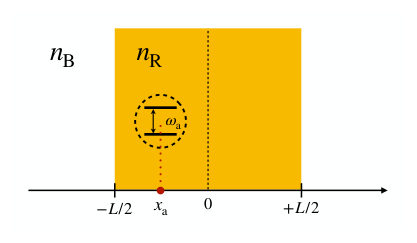
<figcaption class="paper-figure-caption"><b>Fig 1.</b> FIG. 1: Sketch of the cavity system. The horizontal axis indicates the position coordinate x, while nR and nB are the slab’s and the surroundings’ refractive indices, respectively. A two-level system with transition frequency ωa, highlighted by the dashed circle, is located at position xa, as indicated by the red dotted line.</figcaption>
</figure>
<figure class="paper-figure-card">
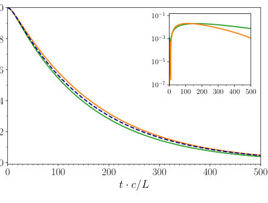
<figcaption class="paper-figure-caption"><b>Fig 2.</b> FIG. 2: Temporal evolution of the excited state population Pe(t) of the TLS with d2 eg = 10−4ℏϵ0c and located at xa/L = 0. The solid green and orange lines indicate, respectively, the computation via the gPM approach using a single and 45 modes. The dashed blue line show the result obtained via the benchmark model. The inset show, in logarithmic scale, the absolute value of the difference between the calculations via the gPM and benchmark approaches, following the same color labels.</figcaption>
</figure>
<figure class="paper-figure-card">
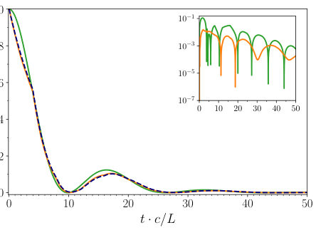
<figcaption class="paper-figure-caption"><b>Fig 3.</b> FIG. 3: Temporal evolution of the excited state population Pe(t) of the TLS with d2 eg = 10−2ℏϵ0c and located at xa/L = 0. The color labels and the plots in the inset are analogous to those used in Fig. 2.</figcaption>
</figure>
<figure class="paper-figure-card">
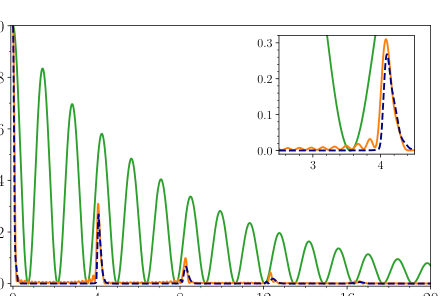
<figcaption class="paper-figure-caption"><b>Fig 4.</b> FIG. 4: Temporal evolution of the excited state population Pe(t) of the TLS with d2 eg = 1.2ℏϵ0c and located at xa/L = 0. The color labels are analogous to those used in Fig. 2. The inset depicts a enlarged version of the current plot around tc/L = 3.5, highlighting the first peak of Pe(t).</figcaption>
</figure>
<figure class="paper-figure-card">
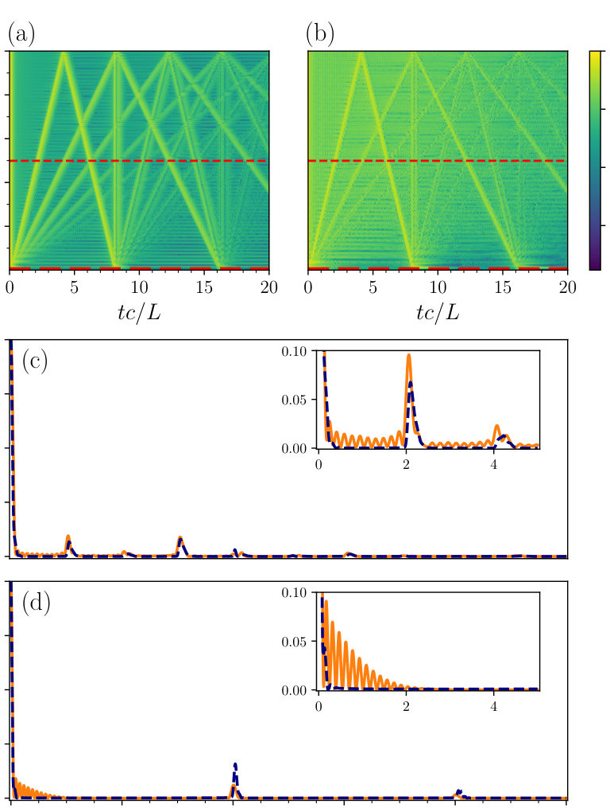
<figcaption class="paper-figure-caption"><b>Fig 5.</b> FIG. 5: Excited state population Pe(t), as a function of time t, and for different positions x of the TLS. We set d2 eg = 1.2 ℏϵ0c. The plots in (a) and (b) show the computations performed via the benchmark and gPM models, respectively, where 45 modes were employed in the latter. In these plots, we highlight with red dashed lines two positions: x/L = 0.25 and x/L ≈0.5. The plots (c) and (d) correspond, respectively, to the cross-section of the color plots along the aforementioned lines, where the dashed blue and solid orange lines correspond to the sections of (a) and (b), respectively. Finally, the insets are enlarged version of the corresponding plots.</figcaption>
</figure>
</div>

<p><strong>Summary.</strong> This paper develops and applies a generalized pseudomode (gPM) formalism to model quantum emitters in lossy, multimode cavities. It shows that accurately describing the system's dynamics requires including multiple cavity modes, and the resulting population dynamics exhibit strong dependencies on both the coupling strength and the emitter's physical location. This advances the theoretical understanding of open quantum systems in structured photonic environments.</p>
<p><strong>Why it may be interesting.</strong> This work is highly relevant as it tackles the non-trivial extension of cQED theory into the multimode regime, providing a robust theoretical framework (gPM) to describe complex, non-Markovian dynamics that are crucial for understanding quantum light-matter interactions in realistic, lossy cavities.</p>
<details>
<summary>Detailed structure</summary>
<p><strong>Main problem.</strong> The paper addresses the challenge of accurately modeling the dynamics of a quantum emitter coupled to a lossy, multimode cavity in the strong coupling regime of cavity quantum electrodynamics (cQED).</p>
<p><strong>Main result.</strong> It demonstrates that capturing the essential multimode signatures requires incorporating an increasing number of cavity modes as the light-matter coupling strength increases, and that the dynamics exhibit a strong dependence on the emitter's position within the cavity.</p>
<p><strong>Method.</strong> The authors utilize the generalized pseudomode (gPM) approach, which replaces the continuous field spectrum with a discrete set of effective cavity modes to solve the system's master equation.</p>
<p><strong>Model / system.</strong> The system consists of a two-level quantum emitter (TLS) placed in a one-dimensional, lossy resonator cavity. The dynamics are modeled using the von Neumann equation benchmarked against the gPM master equation, which incorporates cavity losses and coupling to multiple resonant field modes.</p>
<p><strong>Key observables.</strong> Excited state population $P_e(t)$, which shows transitions from simple exponential decay (weak coupling) to damped oscillations (strong coupling) and complex pulsed behavior (multimode strong coupling).</p>
<p><strong>Important parameters / regimes.</strong> Light-matter coupling strength ($d_{eg}^2$), atom's position ($x_a/L$), and the number of cavity modes ($N$).</p>
<p><strong>Assumptions / limitations.</strong> The gPM approach is an approximation valid in the limit of infinite modes, and the analysis often relies on the Rotating Wave Approximation (RWA) or specific asymptotic limits ($   au\Gamma \gg 1$).</p>
<p><strong>Figures summary.</strong> Figures illustrate the time evolution of the excited state population $P_e(t)$ under different coupling regimes: single-mode weak coupling (exponential decay), single-mode strong coupling (damped oscillations), and multimode strong coupling (pulsed peaks).</p>
<p><strong>Paper structure.</strong> The paper establishes the physical model and the benchmark continuum approach, then introduces and applies the gPM formalism. It systematically investigates the dynamics by varying the coupling strength and the emitter's position, comparing results across different coupling regimes.</p>
</details>
<details>
<summary>Abstract</summary>
<p>In the multimode regime of cavity quantum electrodynamics (cQED), light-matter coupling can be strong enough such as to allows a quantum emitter to couple with multiple resonant field modes. This regime leaves distinctive signatures in the behavior of both the field and the emitter, which are already accessible by modern experimental techniques. To model such effects in lossy cavities, effective discrete-mode approaches have been widely employed, despite their accuracy beyond two modes remaining rarely benchmarked. In this work, we demonstrate the necessity of employing multiple modes to describe the multimode signatures by analyzing the dynamics of an atom in a one-dimensional lossy resonator. The atom's dynamics is simulated using the formalism developed in Weitzel et al. (2026) (arXiv:2512.18478), where a resonance quantization prescription is provided. We investigate its dependency with respect to two different parameters: the light-matter coupling strength and the atom's position. In the former case, we find that the minimal number of modes necessary to capture the essential features of the atom's dynamics increases with the coupling strength. In the latter, we further observe that the multimode regime leads to a strong position-dependency of the atom's dynamics. In all cases, we discuss the physical interpretation of our results and further discuss about how the employed formalism can be used to recover physically relevant quantities.</p>
</details>
<p><sub><a href="#top">↑ back to top</a></sub></p>

<p><a id="paper-2610.34899"></a></p>
<h3 id="modulation-and-protection-of-entanglement-in-a-two-qubit-system-via-two-interacting-oscillator-control"><a href="http://arxiv.org/abs/2610.34899v1">Modulation and protection of entanglement in a two-qubit system via two interacting oscillator control</a></h3>
<p><strong>Authors:</strong> Pablo Carlos López Vázquez, Andrés García, Josué Romero<br>
<strong>Type:</strong> theory · <strong>Category:</strong> quantum information and computing · <strong>PDF:</strong> <a href="https://arxiv.org/pdf/2610.34899v1">https://arxiv.org/pdf/2610.34899v1</a><br>
<strong>Analysis basis:</strong> full PDF text, analyzed in chunks
<strong>Topic relevance:</strong> <code>analog quantum simulation</code> <strong>3/5</strong> · <code>correlated / nonlocal dissipation</code> <strong>3/5</strong> · <code>Tavis-Cummings &amp; cavity-many-emitter</code> <strong>2/5</strong> · <code>driven-dissipative phase transition</code> <strong>2/5</strong> · <code>methods for driven-dissipative</code> <strong>2/5</strong> · <code>Keldysh / 2PI / non-Gaussian methods</code> <strong>1/5</strong> · <code>non-equilibrium universality</code> <strong>1/5</strong> · <code>quantum measurements</code> <strong>1/5</strong></p>
<div class="figure-strip-hint">↔ Scroll figures horizontally</div>
<div class="paper-figures-scroll">
<figure class="paper-figure-card">
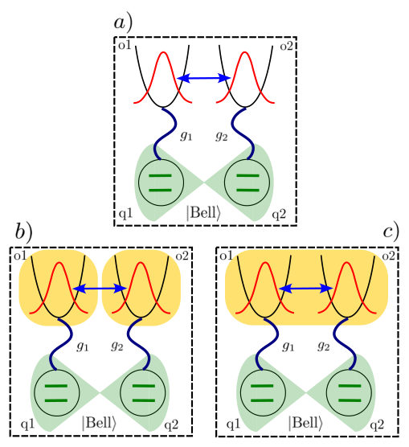
<figcaption class="paper-figure-caption"><b>Fig 1.</b> FIG. 1. Schematic representation of the composite system con- sisting of two qubits coupled to two interacting harmonic oscilla- tors. Each qubit interacts with its corresponding oscillator through a local dephasing interaction, while the oscillators are coupled through tunable position–position and momentum–momentum inter- actions. Panel (a) illustrates a configuration where no dissipation is present and the qubits are initially prepared in a maximally entan- gled Bell state. Panel (b) depicts the configuration investigated in the entanglement-protection analysis, where the qubits are initially pre- pared in a maximally entangled Bell state and the oscillator subsys- tem is subject to...</figcaption>
</figure>
<figure class="paper-figure-card">
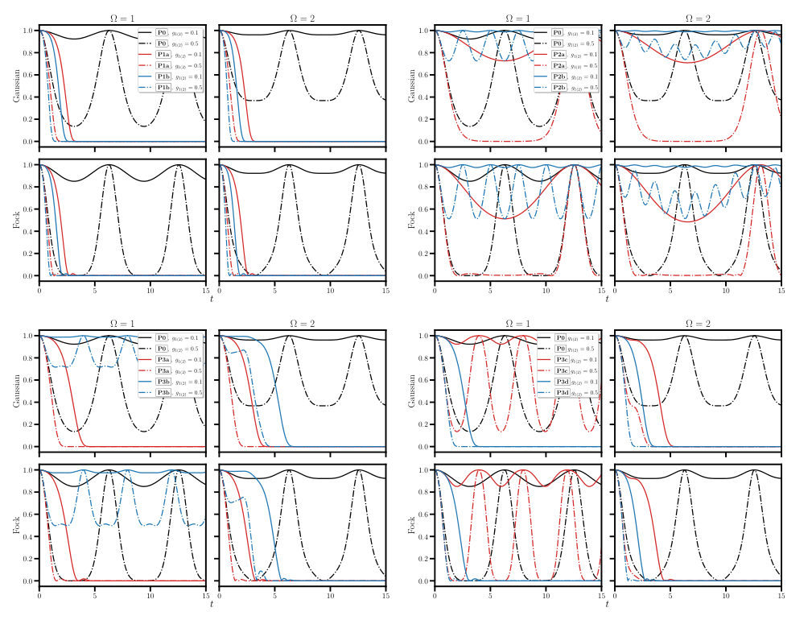
<figcaption class="paper-figure-caption"><b>Fig 2.</b> FIG. 2. Time evolution of the two-qubit concurrence C (t) for representative oscillator interaction parameters (α,β) belonging to the dynamical regions P0, P1a–P1b, P2a–P2b, and P3a–P3d identified in Fig. 6. The results are shown for ∆1 = ∆2 = 1, g1 = g2 = 0.1,0.5, and Ω= 1,2. The uncoupled-oscillator configuration, α = β = 0, is included in each panel as a reference. The interaction parameters used for each dynamical region are specified as follows: Top left four panels correspond to P1a and P1b; i.e., complex eigenvalues with dominant real part and for the particular cases (a): α = − √</figcaption>
</figure>
<figure class="paper-figure-card">
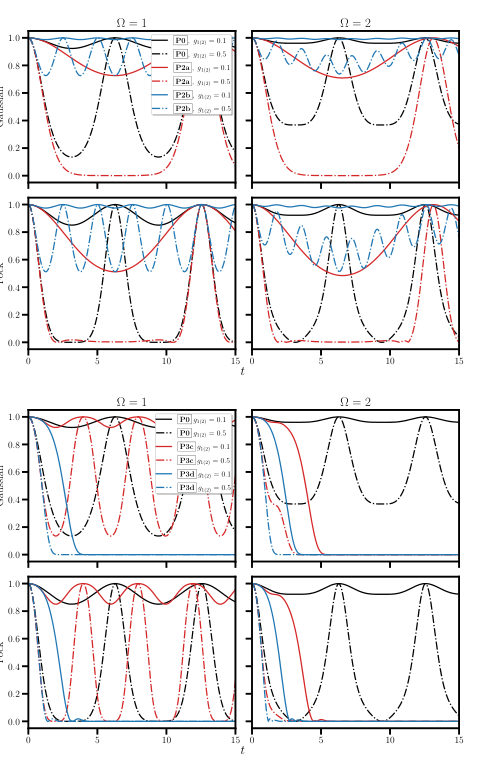
<figcaption class="paper-figure-caption"><b>Fig 3.</b> Figure 3 illustrates this control mechanism. The left panel summarizes the different concurrence behaviors ob- served across the (α,β) parameter space. The regions labeled O.R. correspond to oscillatory concurrence with repeated re- vivals, whereas D. identifies configurations exhibiting pre-</figcaption>
</figure>
<figure class="paper-figure-card">
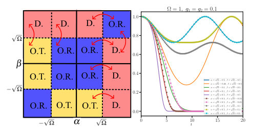
<figcaption class="paper-figure-caption"><b>Fig 4.</b> FIG. 3. Control of two-qubit entanglement dynamics through the oscillator interaction parameters. The left panel classifies the ob- served concurrence behavior in the (α,β) parameter space: O.R. de- notes oscillatory dynamics with entanglement revivals, D. denotes predominantly decaying concurrence, and O.T. identifies configura- tions exhibiting oscillatory or decaying behavior depending on Ω. The right panel illustrates the change in concurrence dynamics as the interaction parameters are varied between regions with entanglement revivals and regions dominated by concurrence decay.</figcaption>
</figure>
<figure class="paper-figure-card">
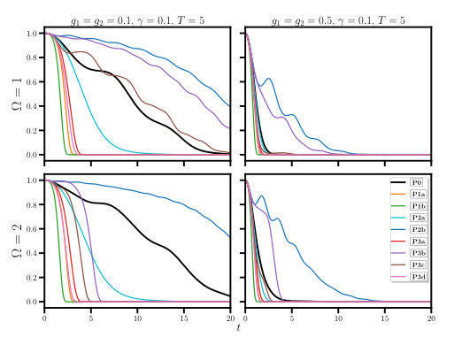
<figcaption class="paper-figure-caption"><b>Fig 5.</b> FIG. 4. Time evolution of the two-qubit concurrence C (t) in the presence of local thermal dissipation. The panels correspond to different oscillator frequency ratios Ω= 1,2 and qubit–oscillator coupling strengths g1 = g2 = 0.1,0.5. The black curve represents the uncoupled-oscillator configuration P0, (α,β) = (0,0). The re- maining curves correspond to the representative interaction param- eters P1a: (− √</figcaption>
</figure>
</div>

<p><strong>Summary.</strong> This theoretical paper explores how engineered interactions between auxiliary harmonic oscillators can be used to control and protect entanglement in a two-qubit system. By analyzing the stability of the coupled bosonic modes, the authors demonstrate that specific coupling configurations can counteract entanglement decay, even when environmental dissipation is present. The methodology relies on advanced techniques like the characteristic-function representation for solving open quantum system dynamics.</p>
<p><strong>Why it may be interesting.</strong> This work is highly relevant as it provides a concrete, engineered mechanism—using bosonic modes—to actively control and protect quantum information (entanglement) against environmental decoherence, a central theme in quantum information science.</p>
<details>
<summary>Detailed structure</summary>
<p><strong>Main problem.</strong> The paper investigates methods to control and protect entanglement in a two-qubit system by engineering interactions with auxiliary harmonic oscillators.</p>
<p><strong>Main result.</strong> The study establishes a direct link between the dynamical stability of the auxiliary bosonic modes and the controllability of the two-qubit entanglement, showing that specific couplings can preserve entanglement even under dissipation.</p>
<p><strong>Method.</strong> The dynamics are analyzed using the characteristic-function representation to obtain analytical solutions for the composite system, covering both coherent and dissipative evolution.</p>
<p><strong>Model / system.</strong> The system consists of two qubits coupled to two interacting harmonic oscillators. The Hamiltonian includes qubit terms, oscillator terms, coupling terms, and tunable oscillator interaction terms ($\alpha \hat{x}_a \hat{x}_b + eta \hat{p}_a \hat{p}_b$). Dissipation is modeled using both local and global master equations.</p>
<p><strong>Key observables.</strong> Two-qubit concurrence (entanglement), and the dynamical stability properties (eigenvalues) of the coupled oscillators.</p>
<p><strong>Important parameters / regimes.</strong> Tunable coupling strengths ($\alpha, eta$), oscillator frequencies ($\omega_a, \omega_b$), and the ratio $\Omega = \omega_b/\omega_a$.</p>
<p><strong>Assumptions / limitations.</strong> The analysis relies on the quadratic nature of the oscillator Hamiltonian and the use of the Born and Markov approximations for the master equation derivation.</p>
<p><strong>Figures summary.</strong> Figure 1 schematically illustrates the system setup for no dissipation, local dissipation, and global dissipation.</p>
<p><strong>Paper structure.</strong> The paper progresses from defining the full Hamiltonian and system model to deriving the dynamics using the characteristic-function representation. It then analyzes the impact of different dissipation models (local vs. global) and classifies the parameter space based on oscillator stability regimes to predict entanglement evolution.</p>
</details>
<details>
<summary>Abstract</summary>
<p>We investigate the control and protection of two-qubit entanglement through engineered interactions between two auxiliary harmonic oscillators. Each qubit is coupled to a local oscillator via a dephasing interaction, while the oscillators interact through independently tunable position-position and momentum-momentum couplings. Employing the characteristic-function representation, we obtain analytical solutions for the composite-system dynamics and examine how the stability properties of the coupled oscillators determine the evolution of two-qubit concurrence. Our analysis reveals distinct dynamical regimes exhibiting entanglement revivals, suppression, or decay, and identifies configurations in which oscillator interactions effectively reduce entanglement degradation. We further investigate the influence of thermal dissipation using local and global master-equation descriptions, demonstrating that suitable oscillator couplings can preserve substantial two-qubit entanglement under the dissipative conditions considered. These results establish a connection between the dynamical stability of auxiliary bosonic modes and the controllability of entanglement in discrete-variable quantum systems, providing a potential strategy for entanglement protection through engineered oscillator interactions.</p>
</details>
<p><sub><a href="#top">↑ back to top</a></sub></p>

<p><a id="paper-2610.34176"></a></p>
<h3 id="estimation-of-covariance-matrix-for-stokes-like-measurement-under-phase-space-deformation"><a href="http://arxiv.org/abs/2610.34176v1">Estimation of covariance matrix for Stokes-like measurement under phase-space deformation</a></h3>
<p><strong>Authors:</strong> Pinaki Patra<br>
<strong>Type:</strong> both · <strong>Category:</strong> other · <strong>PDF:</strong> <a href="https://arxiv.org/pdf/2610.34176v1">https://arxiv.org/pdf/2610.34176v1</a><br>
<strong>Analysis basis:</strong> full PDF text, analyzed in chunks
<strong>Topic relevance:</strong> <code>interference shaping light</code> <strong>3/5</strong> · <code>quantum measurements</code> <strong>3/5</strong> · <code>quantum optics experiment</code> <strong>3/5</strong> · <code>Keldysh / 2PI / non-Gaussian methods</code> <strong>1/5</strong> · <code>analog quantum simulation</code> <strong>1/5</strong> · <code>correlated / nonlocal dissipation</code> <strong>1/5</strong> · <code>driven-dissipative phase transition</code> <strong>1/5</strong> · <code>methods for driven-dissipative</code> <strong>1/5</strong></p>
<div class="figure-strip-hint">↔ Scroll figures horizontally</div>
<div class="paper-figures-scroll">
<figure class="paper-figure-card">
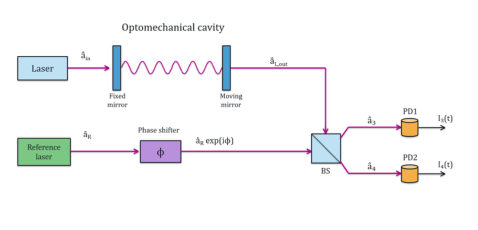
<figcaption class="paper-figure-caption"><b>Fig 1.</b> FIG. 1. Optomechanical interaction and Stokes-like measurement. An input optical beam</figcaption>
</figure>
</div>

<p><strong>Summary.</strong> This paper proposes an experimental method to detect phase-space noncommutativity in an oscillator by coupling it to an optical cavity. By performing Stokes-like measurements on the output light, the authors can extract modified normal-mode frequencies. These frequencies are then used to estimate the noncommutative parameters ($ heta$ and $\eta$), establishing a novel optomechanical test for non-canonical quantum dynamics.</p>
<p><strong>Why it may be interesting.</strong> This work bridges abstract mathematical concepts (noncommutative geometry) with concrete, measurable quantum optics experiments (optomechanics), providing a tangible pathway to test fundamental physics beyond standard quantum mechanics.</p>
<details>
<summary>Detailed structure</summary>
<p><strong>Main problem.</strong> The paper investigates how phase-space noncommutativity in an anisotropic oscillator can be experimentally detected using an optomechanical setup.</p>
<p><strong>Main result.</strong> The optical response, measured via Stokes-like interferometry, provides a theoretical link to estimate the noncommutative parameters ($    heta$ and $\eta$) by determining the modified normal-mode frequencies.</p>
<p><strong>Method.</strong> The authors derive the covariance matrix for the output optical field and formulate an interferometric detection scheme using phase-controlled reference beams.</p>
<p><strong>Model / system.</strong> The system involves an anisotropic oscillator whose dynamics are governed by a noncommutative phase-space algebra, coupled to a coherent optical probe in an optomechanical interaction.</p>
<p><strong>Key observables.</strong> Optical coherence attenuation ($A_M$), nonlinear Kerr phase ($\Phi_K$), and the estimated covariance matrix for the output field.</p>
<p><strong>Important parameters / regimes.</strong> Noncommutative parameters ($    heta$ and $\eta$), mechanical normal-mode frequencies ($\lambda_j$), and coupling strengths ($g$).</p>
<p><strong>Assumptions / limitations.</strong> The mechanical oscillator state is approximated by a Gaussian state (low temperature, below 4 Kelvin), and the measurement relies on an ideal optomechanical interaction.</p>
<p><strong>Paper structure.</strong> The paper moves from establishing the noncommutative Hamiltonian and its transformation to canonical variables, deriving the covariance matrix, and finally applying this framework to an optomechanical measurement protocol using Stokes-like measurements to extract the deformation parameters.</p>
</details>
<details>
<summary>Abstract</summary>
<p>We investigate the signatures of phase-space noncommutativity in an anisotropic oscillator and propose an optomechanical protocol to experimentally characterize it through Stokes-like measurements of an optical field. Starting from a deformed phase-space algebra characterized by the position-position and momentum-momentum noncommutativity parameters $θ$ and $η$, we employ the Darboux transformation to construct an equivalent Hamiltonian in canonical variables. The resulting effective dynamics exhibits correlations between the oscillator degrees of freedom. We derive the corresponding covariance matrix and examine how the noncommutative parameters enter the mechanical dynamics and the optical response.   By coupling the oscillator to a coherent optical probe, we obtain analytical expressions for the time-dependent optical coherence attenuation and the nonlinear Kerr phase. We then formulate an interferometric detection scheme through Stokes-like measurements, in which the outgoing optical field is combined with a phase-controlled reference beam at a balanced beam splitter, and the resulting photocurrents are measured using photodetectors. The optical response provides access to the modified normal-mode frequencies, which enables us to estimate experimental values of $θ$ and $η$. Our results establish a theoretical connection between NC-space dynamics, Gaussian-state correlations, and experimentally accessible optical observables, suggesting an optomechanical route toward testing signatures of phase-space noncommutativity.</p>
</details>
<p><sub><a href="#top">↑ back to top</a></sub></p>

<p><a id="paper-2610.35734"></a></p>
<h3 id="parametrically-enhanced-ergotropy-and-charging-power-in-a-three-mode-bosonic-quantum-battery"><a href="http://arxiv.org/abs/2610.35734v1">Parametrically Enhanced Ergotropy and Charging Power in a Three-Mode Bosonic Quantum Battery</a></h3>
<p><strong>Authors:</strong> Mustapha Tarboun, Mohamed Amazioug<br>
<strong>Type:</strong> theory · <strong>Category:</strong> other · <strong>PDF:</strong> <a href="https://arxiv.org/pdf/2610.35734v1">https://arxiv.org/pdf/2610.35734v1</a><br>
<strong>Analysis basis:</strong> full PDF text, analyzed in chunks
<strong>Topic relevance:</strong> <code>driven-dissipative phase transition</code> <strong>3/5</strong> · <code>methods for driven-dissipative</code> <strong>3/5</strong> · <code>analog quantum simulation</code> <strong>2/5</strong> · <code>non-equilibrium universality</code> <strong>2/5</strong> · <code>Keldysh / 2PI / non-Gaussian methods</code> <strong>1/5</strong> · <code>Tavis-Cummings &amp; cavity-many-emitter</code> <strong>1/5</strong> · <code>correlated / nonlocal dissipation</code> <strong>1/5</strong> · <code>quantum measurements</code> <strong>1/5</strong></p>
<div class="figure-strip-hint">↔ Scroll figures horizontally</div>
<div class="paper-figures-scroll">
<figure class="paper-figure-card">
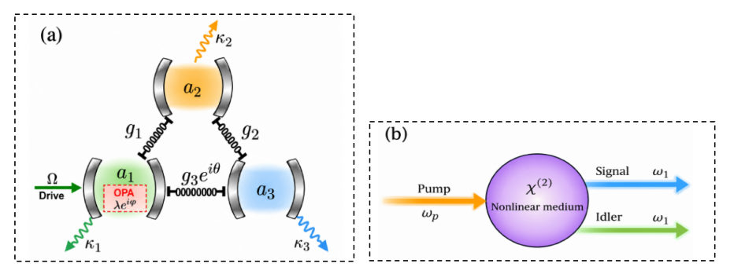
<figcaption class="paper-figure-caption"><b>Fig 1.</b> FIG. 1: (a) Schematic representation of the system battery under consideration. (b) The system utilizes a degenerate OPA process where, mediated by second-order nonlinearity χ(2), a single pump photon of frequency ωp is converted into two cavity photons of frequency ω1 (signal and Idler with same frequency ω1). This process is governed by the resonance relation ωp = 2ω1.</figcaption>
</figure>
<figure class="paper-figure-card">
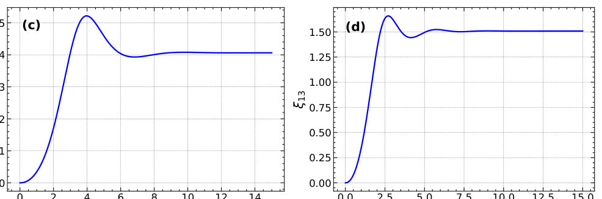
<figcaption class="paper-figure-caption"><b>Fig 2.</b> FIG. 2: Dynamical evolution of the charging of the quantum battery. (a,b) Stored energies of the charger and battery, Ech and EB, without (λ = 0) (a) and with the OPA (λ/κ = 1) (b), respectively. (c,d) Corresponding energy ratios ξ13 = EB/Ech. The other parameters are the same as in the table I.</figcaption>
</figure>
<figure class="paper-figure-card">
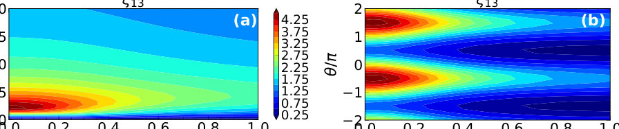
<figcaption class="paper-figure-caption"><b>Fig 3.</b> FIG. 3: Plot of stationary charging characteristics against the OPA gain λ and the coupling parameters g. (a1, a2) Stationary charger and battery energies for g = 0 (black curve), 3κ (red curve), and 5κ (blue curve). (b1, b2) Corresponding stationary charger and battery for θ = −π/2 (black curve), 0 (red curve), and +π/2 (blue curve). (c) Stationary energy ratio ξ13 in the (λ/κ, g/κ) plane. (d) Stationary energy ratio in the (λ/κ, θ/π) plane. The other parameters are the same as in the table I.</figcaption>
</figure>
<figure class="paper-figure-card">
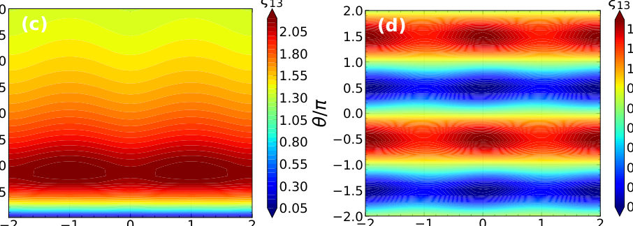
<figcaption class="paper-figure-caption"><b>Fig 4.</b> FIG. 4: Contour plot of the stationary ratio ξ13 as a function the OPA phase ϕ/π and in panel (c) coupling strength g/κ and in panel (d) the phase θ/π. The parameters are fixed to the reference values in Table I.</figcaption>
</figure>
<figure class="paper-figure-card">
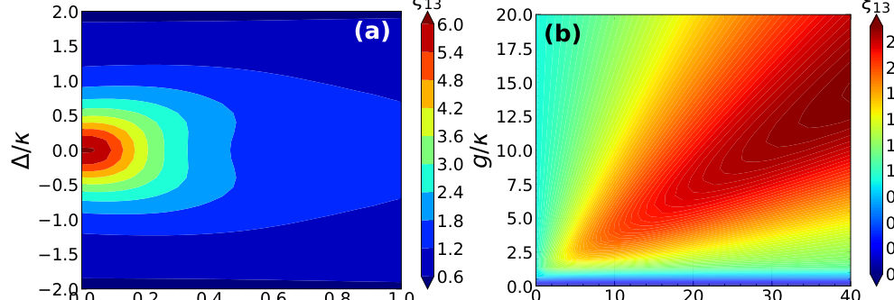
<figcaption class="paper-figure-caption"><b>Fig 5.</b> FIG. 5: (a) Stationary energy ratio ξ13 in the (λ/κ, ∆/κ) plane with κ2 = 50κ. (b) Stationary energy ratio ξ13 in the (κ2/κ, g/κ) plane. Other parameters are fixed to the reference values in Table I.</figcaption>
</figure>
</div>

<p><strong>Summary.</strong> The authors propose a theoretical scheme to boost the performance of a quantum battery by integrating a degenerate optical parametric amplifier (OPA). By modeling the three-mode system using the Lindblad master equation, they demonstrate that active parametric driving significantly increases the stored energy and extractable work. This research highlights how engineered quantum sources can enhance energy transfer efficiency in quantum devices.</p>
<p><strong>Why it may be interesting.</strong> This work is highly relevant as it combines quantum optics (OPA, cavity QED) with open quantum system dynamics (Lindblad equation) to model energy storage, a key area in quantum information science and quantum thermodynamics.</p>
<details>
<summary>Detailed structure</summary>
<p><strong>Main problem.</strong> The primary goal is to theoretically enhance the ergotropy (extractable work) and charging power of a quantum battery system.</p>
<p><strong>Main result.</strong> Active parametric driving using a degenerate OPA achieves a multi-order-of-magnitude boost in stored energy and charging power while maintaining nonreciprocal energy trapping.</p>
<p><strong>Method.</strong> The analysis uses a strictly open-quantum-system framework derived from the Lindblad master equation to track expectation values and dynamics.</p>
<p><strong>Model / system.</strong> The system is a three-mode bosonic quantum battery: a coherently driven charger cavity, a strongly dissipative auxiliary mediator cavity, and an energy-storage battery cavity. An OPA is integrated into the charger cavity to act as an active energy source.</p>
<p><strong>Key observables.</strong> Stored energy ($E_B, E_{ch}$), peak charging power ($P_B$), Ergotropy ($W_B$), and the energy ratio ($\xi_{13}$).</p>
<p><strong>Important parameters / regimes.</strong> OPA gain ($\lambda$), pump phase, coupling phases, and pure dephasing rates ($\gamma_p$).</p>
<p><strong>Assumptions / limitations.</strong> The dynamics are modeled using the Lindblad master equation, and the analysis accounts for fluctuations introduced by the two-photon pumping process.</p>
<p><strong>Figures summary.</strong> Figures illustrate the schematic system setup, the OPA process, and show how increasing OPA gain enhances charging power and ergotropy, while pure dephasing degrades these metrics.</p>
<p><strong>Paper structure.</strong> The paper establishes the physical model, derives the dynamics via the Lindblad master equation, analyzes the effect of parametric driving on energy transfer and work extraction, and finally assesses the robustness against decoherence mechanisms like pure dephasing.</p>
</details>
<details>
<summary>Abstract</summary>
<p>Quantum batteries are quantum systems that potentially serve as fuel for other quantum devices by receiving and supplying energy. In this work, we propose a theoretical scheme to enhance ergotropy and charging power of quantum Battery in the system under consideration through squeezed light. Moreover, The system comprises a coherently driven charger cavity, a strongly dissipative auxiliary cavity acting as a mediator, and an energy--storage battery cavity. Quantum nonreciprocity and directional energy flow are established via destructive quantum interference between the direct coupling path and the loss--engineered indirect path. A degenerate optical parametric amplifier integrated into the charger cavity acts as an active, phase--sensitive energy source that injects two--photon quantum excitations and anomalous correlations. Using a strictly open--quantum--system framework derived directly from the Lindblad master equation, we obtain the full expectation--value dynamics and stationary states. We show that active parametric driving drastically increases the stored energy and peak charging power while maintaining nonreciprocal energy trapping in the battery. We achieve a multi-order-of-magnitude boost in the battery's stored energy, charging power, and ergotropy. We also analyze the effects of pure dephasing on the charging power, ergotropy, and extractable work quality.. Although two--photon pumping introduces photon--number fluctuations that slightly lower the fractional ergotropy ratio ${\cal W}_{\rm B}/{\cal E}_{\rm B}$, the absolute extractable work remains substantially elevated compared to unassisted configurations.</p>
</details>
<p><sub><a href="#top">↑ back to top</a></sub></p>

<p><a id="paper-2610.34983"></a></p>
<h3 id="trajectory-functionals-in-the-thermodynamics-of-radiation-induced-damage-in-structural-materials"><a href="http://arxiv.org/abs/2610.34983v1">Trajectory Functionals in the Thermodynamics of Radiation-Induced Damage in Structural Materials</a></h3>
<p><strong>Authors:</strong> V. V. Ryazanov<br>
<strong>Type:</strong> theory · <strong>Category:</strong> statistical mechanics · <strong>PDF:</strong> <a href="https://arxiv.org/pdf/2610.34983v1">https://arxiv.org/pdf/2610.34983v1</a><br>
<strong>Analysis basis:</strong> full PDF text, analyzed in chunks
<strong>Topic relevance:</strong> <code>Keldysh / 2PI / non-Gaussian methods</code> <strong>3/5</strong> · <code>methods for driven-dissipative</code> <strong>3/5</strong> · <code>quantum measurements</code> <strong>3/5</strong> · <code>correlated / nonlocal dissipation</code> <strong>2/5</strong> · <code>non-equilibrium universality</code> <strong>2/5</strong> · <code>driven-dissipative phase transition</code> <strong>1/5</strong></p>
<div class="figure-strip-hint">↔ Scroll figures horizontally</div>
<div class="paper-figures-scroll">
<figure class="paper-figure-card">
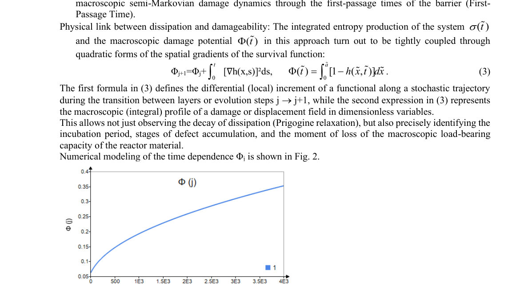
<figcaption class="paper-figure-caption"><b>Fig 1.</b> Fig. 2. Φj: Kinetic curve of change in the macroscopic damage potential of the material mesostructure along the layers of dimensionless time j, reflecting the stages of incubation accumulation and pre-fracture of the irradiated sample. The curve perfectly starts from point 0.06 (influence of boundary absorption) and begins to smoothly, non-linearly bend upwards like a dome, reaching a value of 0.35. This is the stage of active diffusion accumulation of defects. The lower incubation &quot;tail&quot; of the S-shaped curve is passed in the first 50 steps, and now the system is at the stage of avalanche-like semi-Markov growth of damage, striving for its macroscopic limit. The parameters of numerical...</figcaption>
</figure>
<figure class="paper-figure-card">
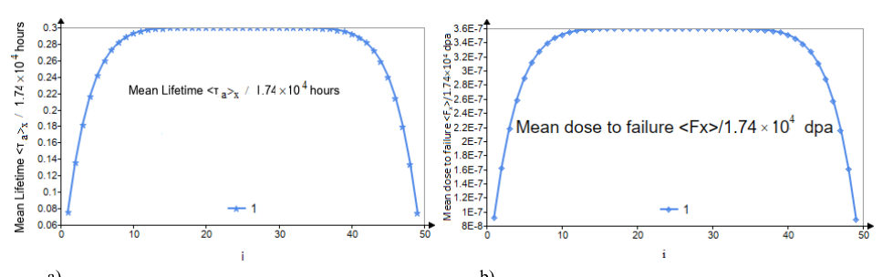
<figcaption class="paper-figure-caption"><b>Fig 2.</b> Fig. 3b). Spatial distribution of the Mean dose to failure &lt;Fx&gt;/1.74×10^4 dpa of the WWER-1000/1200 E110 cladding computed via the numerical Feynman–Kac path integration.</figcaption>
</figure>
</div>

<p><strong>Summary.</strong> This theoretical paper develops a sophisticated kinetic framework to model radiation-induced structural degradation in nuclear materials. It maps complex, stochastic defect trajectories onto a macroscopic damage potential using advanced tools from non-equilibrium statistical mechanics. The resulting model successfully predicts the characteristic S-shaped failure curve and highlights critical boundary vulnerabilities.</p>
<p><strong>Why it may be interesting.</strong> The rigorous application of path integrals and non-equilibrium statistical mechanics (like the Doob transform) to model irreversible, history-dependent degradation processes provides advanced tools applicable to open quantum systems far from equilibrium.</p>
<details>
<summary>Detailed structure</summary>
<p><strong>Main problem.</strong> The paper addresses the structural degradation of materials due to radiation damage by linking microscopic defect path dynamics to macroscopic damage potential.</p>
<p><strong>Main result.</strong> The analysis predicts a characteristic sigmoidal, S-shaped degradation trajectory, showing an abrupt, localized reduction in operational lifespan near material boundaries.</p>
<p><strong>Method.</strong> It employs a novel non-local kinetic framework utilizing the Feynman-Kac formalism, generalized Doob's h-transform, and semi-Markov renewal transport theory.</p>
<p><strong>Model / system.</strong> The system modeled is WWER-1000/1200 fuel claddings subjected to intense neutron irradiation, treated via a two-level hierarchical description.</p>
<p><strong>Key observables.</strong> The integrated damage potential ($\Phi$), the conditional survival probability ($h(x, t)$), and the mean lifetime ($    au_{    ext{avg}}$).</p>
<p><strong>Important parameters / regimes.</strong> Radiation dose (dpa), structural commutator terms, and the critical absorbing macro-barrier ($x_c$).</p>
<p><strong>Assumptions / limitations.</strong> The approach assumes the failure of classical models to capture non-linear stochasticity and relies on the mathematical closure provided by the generalized Zubarev nonequilibrium statistical operator.</p>
<p><strong>Figures summary.</strong> Figures illustrate the spatial-temporal evolution of the survival probability $h(x, t)$ across different degradation stages and plot the macroscopic damage potential $\Phi_j$ exhibiting the characteristic S-shaped curve.</p>
<p><strong>Paper structure.</strong> The paper develops a framework by first establishing the stochastic process, then deriving the non-local semi-Markov transport operator (adjoint Doob equation), and finally applying this to model the three distinct stages of material failure kinetics.</p>
</details>
<details>
<summary>Abstract</summary>
<p>This paper delivers a novel self-consistent non-local kinetic framework based on dose-dependent semi-Markov renewal transport and the generalized Doob's h-transform to evaluate the structural degradation of WWER-1000/1200 fuel claddings. By leveraging the Feynman-Kac formalism, we map the continuous microscopic defect path trajectories generated by the Liouville operator directly onto the evolution of the macroscopically integrated damage potential. The framework accounts for long-range memory effects in the degradation kinetics via a non-vanishing structural commutator of the path Liouville operator and Zwanzig-Mori projection operators, which mathematically links the spatial restrictions of microscopic sinks to energetic path penalties. Spatial profiling of the cladding's mean lifetime, demonstrates a distinct sigmoidal, S-shaped degradation trajectory encompassing distinct incubation, linear growth, and avalanche breakdown stages. The numerical results reveal an abrupt, localized reduction in the operational lifespan near the cladding boundaries. This marginal vulnerability is shown to be a direct physical consequence of boundary stress field singularities at the fuel cladding interface and localized embrittlement. The developed path integral architecture provides a strict thermodynamic link between non-equilibrium fluctuations and the global Griffiths macro-barrier, offering a robust predictive tool for high-burnup nuclear fuel safety assessments.</p>
</details>
<p><sub><a href="#top">↑ back to top</a></sub></p>

<p><a id="paper-2610.33408"></a></p>
<h3 id="dephasing-powered-open-quantum-dot-battery"><a href="http://arxiv.org/abs/2610.33408v1">Dephasing-powered open quantum-dot battery</a></h3>
<p><strong>Authors:</strong> Alok Nath Singh, Rafael Sánchez, Andrew N. Jordan<br>
<strong>Type:</strong> theory · <strong>Category:</strong> statistical mechanics · <strong>PDF:</strong> <a href="https://arxiv.org/pdf/2610.33408v1">https://arxiv.org/pdf/2610.33408v1</a><br>
<strong>Analysis basis:</strong> full PDF text, analyzed in chunks
<strong>Topic relevance:</strong> <code>driven-dissipative phase transition</code> <strong>3/5</strong> · <code>methods for driven-dissipative</code> <strong>3/5</strong> · <code>non-equilibrium universality</code> <strong>3/5</strong> · <code>Keldysh / 2PI / non-Gaussian methods</code> <strong>1/5</strong> · <code>correlated / nonlocal dissipation</code> <strong>1/5</strong> · <code>quantum measurements</code> <strong>1/5</strong> · <code>scars &amp; prethermalization</code> <strong>1/5</strong></p>
<div class="figure-strip-hint">↔ Scroll figures horizontally</div>
<div class="paper-figures-scroll">
<figure class="paper-figure-card">
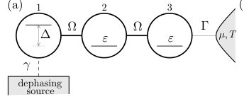
<figcaption class="paper-figure-caption"><b>Fig 1.</b> Figure 1. Dephasing-powered open quantum battery consist- ing of a triple-quantum-dot chain. (a) The rightmost dot is coupled to an electron reservoir at temperature T and chemi- cal potential µ with a tunneling strength Γ. The leftmost dot is detuned by ∆, while the other two have a common energy ε. A nearby dephasing source is coupled to it with strength γ and serves as the sole charging resource. (b) Schematic representation of the quantum dot levels (solid lines) and the hybridized eigenenergies Eg, Ee, and Ed (dashed lines).</figcaption>
</figure>
<figure class="paper-figure-card">
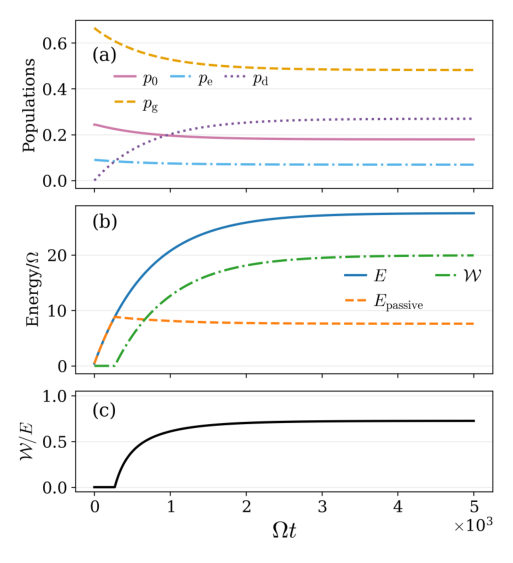
<figcaption class="paper-figure-caption"><b>Fig 2.</b> Figure 2. Charging dynamics of the dephasing-powered quantum battery for ∆= 100Ω, Γ = 0.1Ω, kBT = Ω, µ = ε, and γ = 10Ω. (a) Populations of the empty state and the three single-electron energy eigenstates. (b) Internal energy E = Tr( ˆH0ˆρ), passive-state energy Epassive, and ergotropy W. Dephasing drives the system into a highly excited nonequilib- rium steady state while maintaining a large extractable-work component. (c) Ergotropic efficiency W/E, which approaches ≈73% in the steady state.</figcaption>
</figure>
<figure class="paper-figure-card">
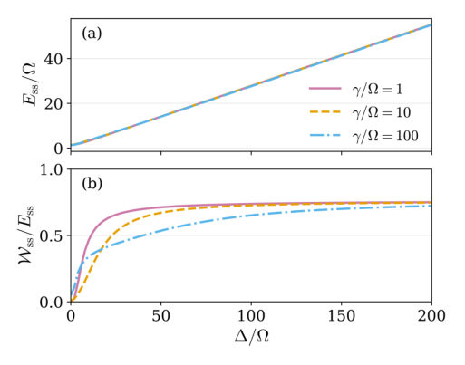
<figcaption class="paper-figure-caption"><b>Fig 3.</b> Figure 3. Steady-state battery performance as a function of barrier detuning ∆, for different cases of dephasing strength γ. The remaining parameters are fixed at Γ = 0.1Ω, kBT = Ω, and µ = ε, with dephasing acting on the barrier dot. Panel (a): steady-state internal energy Ess/Ω. The stored energy increases mainly with ∆, reflecting the increasing energy of the populated barrier-like state, while its dependence on γ is much weaker. Panel (b): ergotropic efficiency Wss/Ess. The efficiency remains high over a broad parameter range, indicating that the dephasing-induced active state is robust against changes in ∆and γ.</figcaption>
</figure>
<figure class="paper-figure-card">
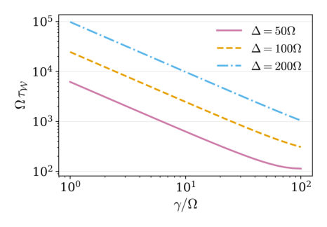
<figcaption class="paper-figure-caption"><b>Fig 4.</b> Figure 4. Ergotropic charging time as a function of dephasing strength for several barrier detunings. Increasing the dephas- ing strength substantially reduces the charging time, showing that γ provides a kinetic control knob for the battery. Larger detuning slows the charging process because the high-energy barrier state is more weakly hybridized with the low-energy states. Parameters: Γ = 0.1Ω, kBT = Ω, and µ = ε.</figcaption>
</figure>
<figure class="paper-figure-card">
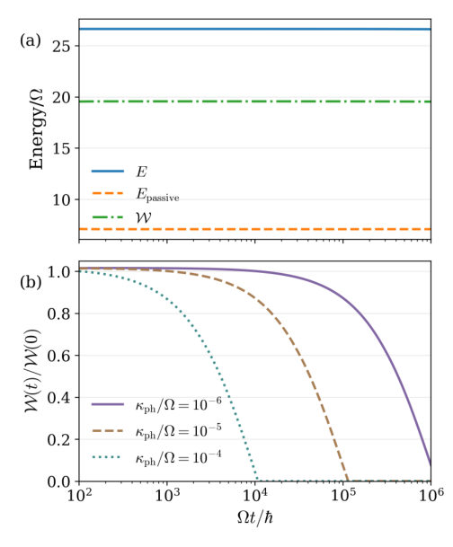
<figcaption class="paper-figure-caption"><b>Fig 5.</b> Figure 5. Stability of the charged quantum battery after the dephasing source is switched off. (a) Internal energy E, passive energy Epassive, and ergotropy W in the absence of phonon relaxation, demonstrating strongly suppressed relax- ation through the thermal reservoir. (b) Ergotropy retention in the presence of phonon-induced relaxation for different val- ues of κph. In each case, phonon relaxation is included during both charging and storage, and the battery is initially charged to 95% of its corresponding steady-state ergotropy. Other pa- rameters are the same as in Fig. 2.</figcaption>
</figure>
</div>

<p><strong>Summary.</strong> This paper demonstrates that local dephasing can autonomously charge an open quantum dot battery by populating a high-energy, weakly coupled state. The stored energy, quantified by ergotropy, can then be efficiently extracted through either coherent unitary protocols or by coupling the system to an external electronic load. This establishes dephasing as a viable, controllable resource for quantum energy storage.</p>
<p><strong>Why it may be interesting.</strong> This work directly addresses non-equilibrium thermodynamics and energy harvesting in mesoscopic quantum systems, providing a concrete physical realization of quantum batteries driven by environmental noise (dephasing).</p>
<details>
<summary>Detailed structure</summary>
<p><strong>Main problem.</strong> The paper proposes and analyzes a mechanism for creating and extracting energy from an open quantum battery powered autonomously by local dephasing.</p>
<p><strong>Main result.</strong> Local dephasing acts as an autonomous resource to charge the battery into a non-equilibrium steady state, and the stored energy can be recovered via unitary modulation or by coupling to an external load.</p>
<p><strong>Method.</strong> The dynamics are modeled using an open quantum system approach, solved via a Lindblad master equation in the eigenbasis of the quantum dot chain.</p>
<p><strong>Model / system.</strong> The system is a triple-quantum-dot (TQD) chain coupled to a thermal reservoir and subjected to local dephasing ($\gamma$). The model operates in the strong-Coulomb blockade and high-detuning limits.</p>
<p><strong>Key observables.</strong> Ergotropic efficiency, stored energy (ergotropy), charging time, and the steady-state populations of the quantum dots.</p>
<p><strong>Important parameters / regimes.</strong> Local dephasing rate ($\gamma$), detuning ($\Delta$), hopping ($\Omega$), and reservoir temperature ($T$).</p>
<p><strong>Assumptions / limitations.</strong> The analysis relies on the high-detuning limit ($\Delta \gg \Omega$) and assumes the dephasing source is the charging resource.</p>
<p><strong>Figures summary.</strong> Figures illustrate the TQD setup, energy level schematics, charging dynamics showing population transfer, and the evolution of stored work ($W$) relative to passive energy ($E_{passive}$).</p>
<p><strong>Paper structure.</strong> The paper first establishes the physical model (TQD, reservoir, dephasing). It then analyzes the steady-state charging process, demonstrating energy storage. Finally, it details two distinct protocols for energy extraction: a unitary cycle and coupling to an electronic load.</p>
</details>
<details>
<summary>Abstract</summary>
<p>We propose a simple realization of an open quantum battery powered by local dephasing. The setup consists of a triple-quantum-dot chain coupled at one end to a thermal reservoir, with the dot at the opposite end strongly detuned to form a high-energy storage element. Local dephasing populates this highly excited state and autonomously drives the system into a nonequilibrium steady state with high ergotropic efficiency. We find a limit where the ergotropic efficiency approaches unity, while the ergotropy itself approaches one-third of the energy detuning. We characterize the battery through its energy-storage performance, charging time, and stability, showing that the charged state remains long-lived after the dephasing source is switched off. We then demonstrate two complementary protocols for extracting the stored energy. First, nearly all the available ergotropy can be recovered through a simple cyclic unitary protocol involving only modulation of the detuned-dot gate. Second, coupling the detuned dot to an electronic load allows the extraction of electrochemical work exceeding the initial ergotropy, thereby accessing part of the battery's passive energy. Our results establish local dephasing as an autonomous resource for charging open quantum batteries and demonstrate simple routes for extracting the resulting stored energy in experimentally accessible mesoscopic platforms.</p>
</details>
<p><sub><a href="#top">↑ back to top</a></sub></p>

<p><a id="paper-2610.35123"></a></p>
<h3 id="generative-ai-in-turbulence-foundations-applications-validations-and-benchmarks"><a href="http://arxiv.org/abs/2610.35123v1">Generative AI in Turbulence: Foundations, Applications, Validations and Benchmarks</a></h3>
<p><strong>Authors:</strong> Luca Biferale, Michele Buzzicotti<br>
<strong>Type:</strong> theory · <strong>Category:</strong> statistical mechanics · <strong>PDF:</strong> <a href="https://arxiv.org/pdf/2610.35123v1">https://arxiv.org/pdf/2610.35123v1</a><br>
<strong>Analysis basis:</strong> full PDF text, analyzed in chunks
<strong>Topic relevance:</strong> <code>non-equilibrium universality</code> <strong>3/5</strong> · <code>Keldysh / 2PI / non-Gaussian methods</code> <strong>2/5</strong> · <code>analog quantum simulation</code> <strong>2/5</strong> · <code>methods for driven-dissipative</code> <strong>2/5</strong> · <code>correlated / nonlocal dissipation</code> <strong>1/5</strong> · <code>driven-dissipative phase transition</code> <strong>1/5</strong> · <code>quantum measurements</code> <strong>1/5</strong> · <code>scars &amp; prethermalization</code> <strong>1/5</strong></p>
<div class="figure-strip-hint">↔ Scroll figures horizontally</div>
<div class="paper-figures-scroll">
<figure class="paper-figure-card">
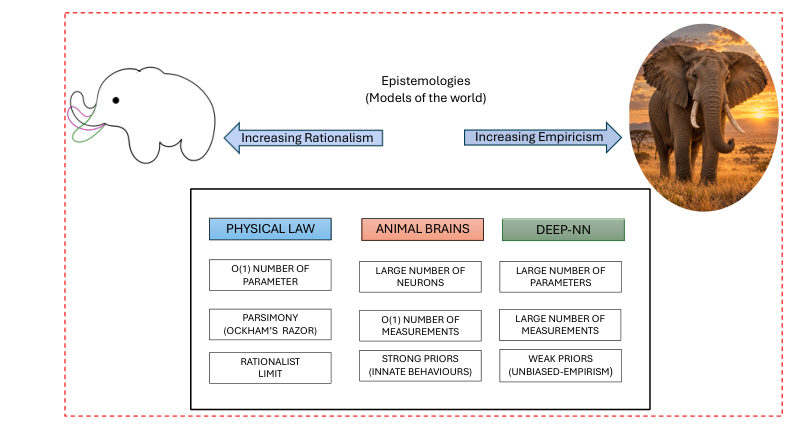
<figcaption class="paper-figure-caption"><b>Fig 1.</b> Figure 1. Top left: Artistic reinterpretation of the results presented in (Mayer et al. 2010) where an elephant contour is coded in a set of four complex parameters, the real part of the 5th parameter is the “wiggle” parameter, a demonstration of von Neumann’s statement cited in the main text. Top right: picture obtained from a Generative AI algorithm. Bottom table: comparison of three epistemologies: physical laws (rationalist, theory-driven), animal brains (strong innate priors and efficient learning), and deep neural networks (data-driven, highly empirical). While physics relies on compact theories and biological brains on structured priors, modern ML learns primarily from large datasets...</figcaption>
</figure>
<figure class="paper-figure-card">
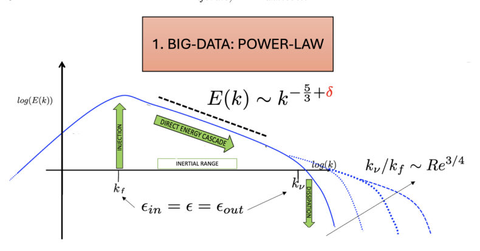
<figcaption class="paper-figure-caption"><b>Fig 2.</b> Figure 2. The Big-4. #1: Scale separation and effective dimensionality. 3D Homogeneous and Isotropic Turbulence (HIT), is characterized by two properties. First, the development of power-law spectra, E(k) ∼k−5/3+δ, within two cutoffs wavenumber: kf, the infrared scale where energy is injected, and kν, the ultraviolet scale where energy is dissipated (Frisch 1995; Pope 2001). In between, the inertial terms, given by self advection vi∂ivj and pressure stress, ∂ip, are leading and a power law distribution of energy per wavenumber is observed, with a slope close to the Kolmogorov prediction 5/3. Statistical stationary imposes a balance between the energy injection, ϵin and the energy...</figcaption>
</figure>
<figure class="paper-figure-card">
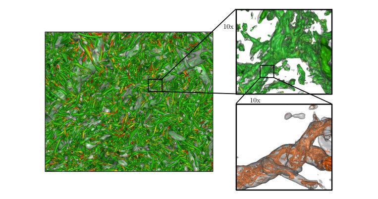
<figcaption class="paper-figure-caption"><b>Fig 3.</b> Figure 3. The Big-4 #1 (continued): Three different zoomed (×10) rendering of the vortex tube structure observed at scales within the inertial range of 3D HIT turbulence (Fig. 2), representing the nested hierarchy of fluctuations characterising 3D turbulence. Frames extracted from (Johns Hopkins Turbulence Databases 2026), permission kindly provided by C. Meneveau, see also B¨urger et al. (2013). It is unknown how to fully characterize the distribution of these huge number of dof, and it is an unresolved problem to develop reliable Reduce Order Models (ROM) that fully describe the intricate set of sub-grid-scale fluctuations, see also the other 3 Big-4 properties described in Figs. 4-6. A...</figcaption>
</figure>
<figure class="paper-figure-card">
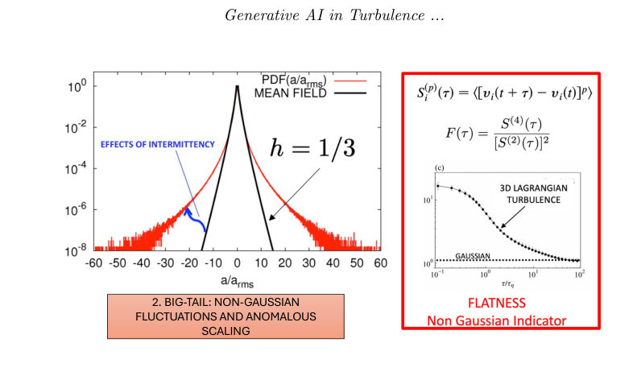
<figcaption class="paper-figure-caption"><b>Fig 4.</b> Figure 4. The Big-4. #2: Big-tails, intermittency, extreme and rare events, non-perturbative and non-Gaussian fluctuations. Left: 3D Eulerian and Lagrangian turbulence is characterized by strong deviations from Gaussianity and the presence of anomalous scaling Alexakis &amp; Biferale (2018). The most striking properties being the development of fat tails (fater and fater by increasing Reynolds) as shown by the standardized PDF of the flow acceleration on the left panel, where extreme intense fluctuations up to 50-60 standard deviations can be easily detected. In the figure, red data comes from a DNS of HIT at 10243 resolution points. The black curve corresponds to the prediction obtained by a...</figcaption>
</figure>
<figure class="paper-figure-card">
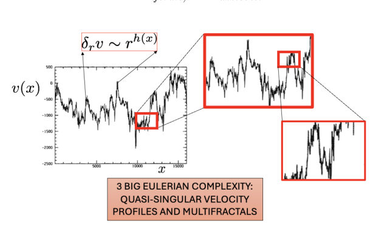
<figcaption class="paper-figure-caption"><b>Fig 5.</b> Figure 5. The Big-4. #3: Rough velocity profiles, loss of regularity and Multifractal fluctuations. Eulerian velocity profile (one component): pictorical description of one-dimensional cut of the 3D HIT configuration shown in Fig (3), with two consecutive zooms. The presence of power-law Fourier spectra is connected to fractional Brownian-like profiles in the real space. Velocity increments in the inertial range of scales, between the IR and UV cutoffs, 1/kν ≪rll1/kf, do show anomalous power-law behavior in fully developed 3D turbulence (Frisch 1995). Actual understanding supports a multifractal picture, i.e. the existence of a set of quasi-singularities characterizing the local scaling...</figcaption>
</figure>
</div>

<p><strong>Summary.</strong> This paper surveys the emerging field of using Generative AI, especially diffusion models, to tackle complex problems in turbulence. It argues that because turbulence is so multiscale and stochastic, standard AI validation metrics are inadequate. The authors stress the critical need for new, physics-informed benchmarks that test fundamental fluid properties.</p>
<p><strong>Why it may be interesting.</strong> While focused on classical fluid dynamics, the core challenge—modeling complex, non-equilibrium, multiscale systems with inherent stochasticity—shares conceptual overlap with open quantum systems and non-equilibrium statistical mechanics.</p>
<details>
<summary>Detailed structure</summary>
<p><strong>Main problem.</strong> Applying Generative AI to complex, multiscale, and stochastic physical systems like turbulence, where incomplete observations lead to multiple plausible solutions.</p>
<p><strong>Main result.</strong> The paper establishes that validation for AI models in turbulence must move beyond simple metrics like visual realism to address fundamental physical properties such as energy transfer, structure functions, and conservation laws.</p>
<p><strong>Method.</strong> It reviews and discusses the application of generative AI techniques, particularly diffusion models and score-based methods, for tasks like stochastic closures and probabilistic reconstruction in fluid dynamics.</p>
<p><strong>Model / system.</strong> The focus is on fully developed, three-dimensional (3D) turbulence, characterized by multiscale dynamics, intermittency, and intrinsic stochasticity, which is far from equilibrium.</p>
<p><strong>Key observables.</strong> Energy transfer, structure functions, anomalous scaling, probability-density-function tails, coherent structures, and conservation laws.</p>
<p><strong>Important parameters / regimes.</strong> Reynolds numbers, forcing mechanisms, and observation conditions that govern the turbulent regime.</p>
<p><strong>Assumptions / limitations.</strong> The primary assumption is that generative AI can model the underlying probability distribution of the flow field, but the authors caution that standard AI metrics are insufficient for physical fidelity.</p>
<p><strong>Figures summary.</strong> Figure 1 compares three epistemologies (physical laws, animal brains, deep neural networks); Figure 2 describes 3D HIT spectra; Figure 3 shows nested vortex structures in 3D HIT.</p>
<p><strong>Paper structure.</strong> The paper is structured as a bridge between AI and turbulence communities, first defining the physical challenges of turbulence, then detailing generative AI applications, and concluding with a strong call for a standardized, physics-aware benchmark ecosystem.</p>
</details>
<details>
<summary>Abstract</summary>
<p>Generative AI offers new approaches to turbulence problems in which incomplete observations or unresolved d.o.f. admit multiple physically plausible solutions. Potential applications include stochastic closures, super-resolution, data assimilation, uncertainty quantification, and the generation of Eulerian and Lagrangian flow ensembles. However, turbulence is not a conventional image-generation problem. Its multiscale dynamics, intermittency, extreme events, rough velocity fields and intrinsically stochastic transport make visual realism, pointwise error, and low-order spectral agreement insufficient measures of physical fidelity. We examine where generative AI provide novel capabilities with emphasis on diffusion models, score-based methods, and related probability-transport formulations. We discuss their use in unconditional generation, probabilistic reconstruction, reduced-order modeling, temporal evolution, and mesh-free representations. We argue that validation must address turbulence properties: energy transfer, structure functions, anomalous scaling, pdf tails, coherent structures, conservation laws, temporal consistency, ensemble diversity and generalization. Finally, we discuss potential limitations in validation, baseline, data availability and reproducibility, and the need for a benchmark ecosystem combining open data, standardized challenges, hidden tests, physics-aware metrics, and documented failures. This paper serves as a bridge between two communities. For AI practitioners, we provide a fair and accessible introduction to turbulence, essential for appreciating the challenges posed by the field and for assessing the physical relevance of generative models. For turbulent practitioners, we provide an introduction to the key technological aspects of Generative AI, clarifying what these tools actually do, and where their potential and current limitations lie.</p>
</details>
<p><sub><a href="#top">↑ back to top</a></sub></p>

<p><a id="paper-2610.35555"></a></p>
<h3 id="quantum-state-revivals-time-quasicrystals-and-entanglement-steering-in-a-fibonacci-driven-central-spin-model"><a href="http://arxiv.org/abs/2610.35555v1">Quantum state revivals, time quasicrystals, and entanglement steering in a Fibonacci-driven central-spin model</a></h3>
<p><strong>Authors:</strong> Anushka Agrawal, Adithya A. Vasista, Tanay Nag, Sayan Choudhury<br>
<strong>Type:</strong> theory · <strong>Category:</strong> statistical mechanics · <strong>PDF:</strong> <a href="https://arxiv.org/pdf/2610.35555v1">https://arxiv.org/pdf/2610.35555v1</a><br>
<strong>Analysis basis:</strong> full PDF text, analyzed in chunks
<strong>Topic relevance:</strong> <code>analog quantum simulation</code> <strong>3/5</strong> · <code>driven-dissipative phase transition</code> <strong>3/5</strong> · <code>non-equilibrium universality</code> <strong>3/5</strong> · <code>methods for driven-dissipative</code> <strong>2/5</strong> · <code>scars &amp; prethermalization</code> <strong>2/5</strong></p>
<div class="figure-strip-hint">↔ Scroll figures horizontally</div>
<div class="paper-figures-scroll">
<figure class="paper-figure-card">
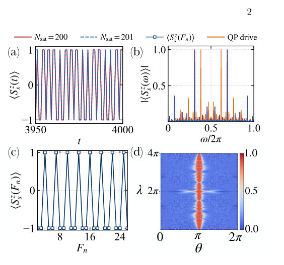
<figcaption class="paper-figure-caption"><b>Fig 1.</b> FIG. 2. Time quasicrystal: (a) The time evolution of the satellite spin magnetization, ⟨Sz s⟩under a perfect π-pulse (θ = π). (b) The Fourier spectrum of the magnetization oscil- lations reveal that the response is shifted sharply from that of the drive. (c) The quasiperiodic magnetization oscillations at θ = π corresponds to period-3 oscillations in Fibonacci time. (d) The time quasi-crystal (TQC) fraction, fTQC [Eq. (3)], obtained from the Fourier response up to 4000 drive periods for Nsat = 200. The system hosts a finite parameter regime where fTQC ≈1 over a finite parameter window, indicating the existence of a long-lived π−pulse-proximate TQC regime.</figcaption>
</figure>
<figure class="paper-figure-card">
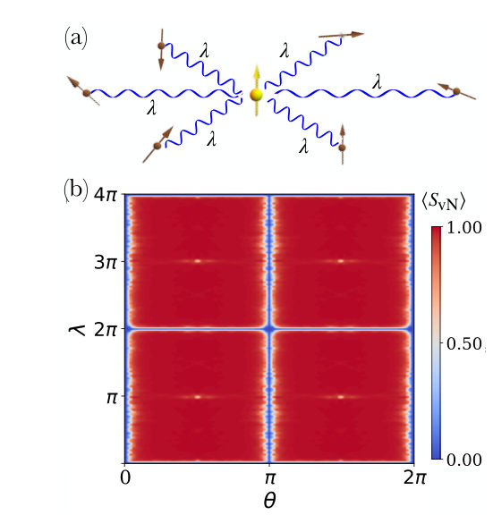
<figcaption class="paper-figure-caption"><b>Fig 2.</b> FIG. 1. Model and Phase diagram: (a) Schematic il- lustration of the central spin model. (b) Time-averaged en- tanglement entropy (SvN), evaluated up to 2000 drive peri- ods for Nsat = 200. The system does not exhibit any en- tanglement growth when θ = nπ ∀λ and λ = 2nπ ∀θ. Fur- thermore, non-ergodic behavior with an intermediate value of SvN (0 &lt; SvN &lt; 1) is observed for Clifford points (λ = (2n + 1)π, θ = (2m + 1)π/2). Most of the remaining parame- ter space is characterized by SvN ∼1, consistent with chaotic dynamics. Here n, m ∈Z</figcaption>
</figure>
<figure class="paper-figure-card">
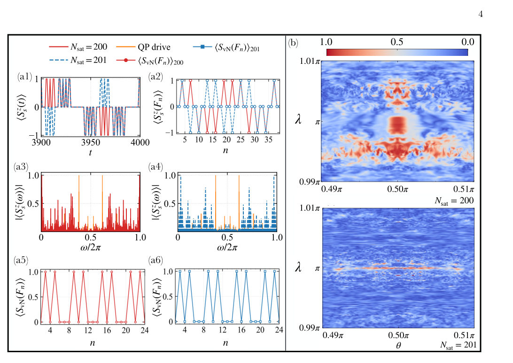
<figcaption class="paper-figure-caption"><b>Fig 3.</b> FIG. 3. Clifford-point dynamics (λ = π, θ = π/2): (a1)-(a2) The satellite-spin magnetization at long times ⟨Sz s(t)⟩for even (Nsat = 200, solid red) and odd (Nsat = 201, dashed blue) in the interval t ∈[3900, 4000] and at Fibonacci times respectively. The system exhibits quasiperiodic oscillations with a pattern that depends only on the parity of Nsat. This leads to oscillations in Fibonacci times with a characteristic period of 12 and 18 respectively for odd and even Nsat. (a3)-(a4) The Fourier spectrum |⟨Sz s(ω)⟩| highlighting the distinct sub-harmonic resonant frequencies distinguishing the two parities. (a5)- (a6) The entanglement entropy, SvN takes only two values during the dynamics...</figcaption>
</figure>
<figure class="paper-figure-card">
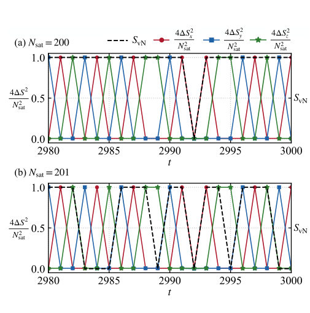
<figcaption class="paper-figure-caption"><b>Fig 4.</b> FIG. 4. Entanglement dynamics at the Clifford points: Time evolution of the entanglement entropy ⟨SvN⟩(black dashed line) and the variances of the satellite spin magne- tization at 4∆S2 x,y,z/N 2 sat (red circles, blue squares and green stars) at the Clifford point θ = π/2, λ = π for Nsat = 200 and 201. For even Nsat, the variance, 4∆S2 α/N 2 sat = 1, whenever SvN = 1, indicating the formation of Bell-cat states. For odd Nsat, 4∆S2 α/N 2 sat = 1 for both SvN = 1 and 0, signalling the generation of both Bell-cat and spin-cat states.</figcaption>
</figure>
<figure class="paper-figure-card">
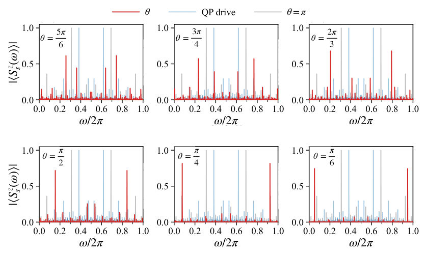
<figcaption class="paper-figure-caption"><b>Fig 5.</b> FIG. 1. Fourier spectra of the satellite-spin magnetization, |⟨Sz s(ω)⟩|, when λ = 2π for decreasing transverse drive strengths θ = 5π/6, 3π/4, 2π/3, π/2, π/4, π/6. The spectra for a perfect π-pulse (θ = π) are overlaid in red as a reference. The response shifts with changing θ.</figcaption>
</figure>
</div>

<p><strong>Summary.</strong> This paper investigates a Fibonacci-driven central-spin model to find non-equilibrium quantum phases like Time Quasicrystals (TQCs). By tuning parameters, the authors show how to suppress entanglement while maintaining long-lived, quasiperiodic oscillations. These controlled dynamics allow the system to generate highly entangled states useful for quantum metrology.</p>
<p><strong>Why it may be interesting.</strong> This work directly addresses non-equilibrium dynamics and the engineering of exotic quantum phases (TQCs) using quasiperiodic driving, which is a major topic in modern AMO and condensed matter theory.</p>
<details>
<summary>Detailed structure</summary>
<p><strong>Main problem.</strong> The research aims to explore non-equilibrium phases of matter beyond the standard Floquet paradigm by realizing perfect quantum revivals and Time Quasicrystals (TQCs).</p>
<p><strong>Main result.</strong> The model exhibits robust TQC regimes and can generate entangled states like Bell-cat and spin-cat states at specific parameter points (Clifford points), enabling Heisenberg-limited metrology.</p>
<p><strong>Method.</strong> The authors use analytical demonstrations, stroboscopic time evolution analysis, and the calculation of entanglement entropy and magnetization oscillations.</p>
<p><strong>Model / system.</strong> The system is a Fibonacci-driven central-spin model featuring Ising interactions between a central spin and multiple satellite spins, driven by quasiperiodic unitaries.</p>
<p><strong>Key observables.</strong> Entanglement entropy ($S_{vN}$), satellite spin magnetization oscillations ($\langle S_{s}^z(t) 
angle$), and the TQC fraction ($f_{TQC}$).</p>
<p><strong>Important parameters / regimes.</strong> The interaction strength ($\lambda$), the transverse driving field ($ heta$), and the Fibonacci driving sequence are key parameters.</p>
<p><strong>Assumptions / limitations.</strong> The analysis relies on the stroboscopic evolution of the system under specific unitary driving sequences.</p>
<p><strong>Figures summary.</strong> Figures illustrate the Fourier spectra of magnetization and entanglement entropy at Clifford points, showing characteristic periodic oscillations (e.g., period-6 for entanglement).</p>
<p><strong>Paper structure.</strong> The paper progresses by first establishing the model, then analyzing non-entangling regimes ($\lambda=2m\pi$), followed by detailed analysis at specific parameter points like $   heta=\pi$ and the Clifford points, culminating in metrological applications.</p>
</details>
<details>
<summary>Abstract</summary>
<p>Motivated by the search for non-equilibrium phases of matter beyond the Floquet paradigm, we propose a route to realize perfect revivals and time quasicrystals (TQCs) in a Fibonacci-driven central-spin model with Ising interactions between the central and satellite spins in the absence of disorder. We analytically demonstrate that when the interaction strength, $λ$ is tuned to $2 m π$, no entanglement is generated between the central and satellite spins at stroboscopic times, independent of the strength of the transverse driving field and the drive sequence. This leads to indefinitely long-lived quasiperiodic oscillations in satellite spin magnetization. Furthermore, for initial states with a definite bath magnetization, no entanglement is generated when the transverse driving field, $θ$ is tuned to $π$ for any value of $ λ$, and the satellite spin magnetization oscillations exhibit period-3 revivals at Fibonacci times. Examining the robustness of these oscillations away from this fine-tuned limit, we identify a parameter regime where the quasiperiodic response does not decay over the timescales probed, giving rise to a long-lived $π$-pulse-proximate TQC regime. We further show that at special Clifford points, the system exhibits perfect quasiperiodic oscillations of the satellite spin magnetization, with a parity-dependent Fourier response. This response persists over the timescales probed, even away from the Clifford points for an even number of satellite spins, leading to the formation of a Clifford-proximate TQC. Finally, we demonstrate that at this Clifford points, the system is steered along an entangled trajectory, leading to the dynamical generation of Bell-cat and spin-cat states. These states exhibit magnetization of collective spin fluctuates quadratically with the number of satellite spins, thereby enabling Heisenberg-limited metrology.</p>
</details>
<p><sub><a href="#top">↑ back to top</a></sub></p>

<p><a id="paper-2610.34483"></a></p>
<h3 id="path-integral-control-in-the-complex-plane"><a href="http://arxiv.org/abs/2610.34483v1">Path integral control in the complex plane</a></h3>
<p><strong>Authors:</strong> Aarón Villanueva<br>
<strong>Type:</strong> theory · <strong>Category:</strong> quantum information and computing · <strong>PDF:</strong> <a href="https://arxiv.org/pdf/2610.34483v1">https://arxiv.org/pdf/2610.34483v1</a><br>
<strong>Analysis basis:</strong> full PDF text, analyzed in chunks
<strong>Topic relevance:</strong> <code>Keldysh / 2PI / non-Gaussian methods</code> <strong>3/5</strong> · <code>methods for driven-dissipative</code> <strong>3/5</strong> · <code>quantum measurements</code> <strong>3/5</strong> · <code>correlated / nonlocal dissipation</code> <strong>1/5</strong> · <code>driven-dissipative phase transition</code> <strong>1/5</strong></p>
<div class="figure-strip-hint">↔ Scroll figures horizontally</div>
<div class="paper-figures-scroll">
<figure class="paper-figure-card">
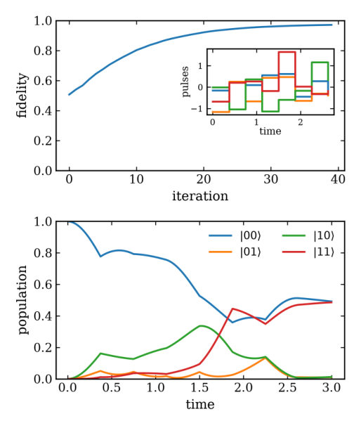
<figcaption class="paper-figure-caption"><b>Fig 1.</b> FIG. 1. Cross-entropy preparation of Φ+ with general- ized amplitude damping. Top: Lindblad fidelity along the learned trajectory, with the four piecewise-constant controls inset. Bottom: computational-basis populations of ¯ρ(t).</figcaption>
</figure>
</div>

<p><strong>Summary.</strong> This paper extends path integral control theory into the complex plane to develop a generalized framework for quantum optimal control. By minimizing the cross-entropy divergence, it derives explicit, optimal feedback and open-loop control laws for quantum systems. This method is particularly valuable for modeling complex open quantum systems with asymmetric dissipation rates.</p>
<p><strong>Why it may be interesting.</strong> This work provides a powerful, mathematically rigorous framework for designing optimal quantum controls that naturally handles complex dynamics and asymmetric dissipation, which is crucial for modern quantum simulation and computation.</p>
<details>
<summary>Detailed structure</summary>
<p><strong>Main problem.</strong> The paper extends path integral control theory, traditionally used for real-valued stochastic processes, to the complex plane to facilitate quantum optimal control.</p>
<p><strong>Main result.</strong> The complex formulation provides a compact and structurally natural treatment for quantum systems, particularly those involving paired non-Hermitian jump channels with unequal dissipation rates.</p>
<p><strong>Method.</strong> It employs a variational approach minimizing the cross-entropy (CE) divergence, which is derived from a change of measure defined on the complex driving noise space.</p>
<p><strong>Model / system.</strong> The theory is applied to quantum systems governed by stochastic Schrödinger equations (SSE) and Lindblad master equations, covering single-qubit and two-qubit models with generalized amplitude damping.</p>
<p><strong>Key observables.</strong> Cross-entropy-optimal feedback and open-loop control formulas, Lindblad fidelity, and the minimum cost related to the KL divergence.</p>
<p><strong>Important parameters / regimes.</strong> Unequal positive dissipation rates, complex Wiener processes, and the structure of the control-noise matching condition.</p>
<p><strong>Assumptions / limitations.</strong> The derivation relies on the assumption that the infimum cost is attained and that the noise structure is restricted to circularly symmetric Gaussian distributions.</p>
<p><strong>Figures summary.</strong> Figure 1 illustrates the cross-entropy preparation of a specific quantum state using generalized amplitude damping, showing the evolution of Lindblad fidelity.</p>
<p><strong>Paper structure.</strong> The paper progresses from general path integral control theory to the complex extension, deriving variational forms for the reverse KL divergence, and then applying this formalism to solve for CE-optimal feedback and open-loop controls for specific quantum dynamics.</p>
</details>
<details>
<summary>Abstract</summary>
<p>Path integral control is a stochastic optimal control framework that computes optimal policies as weighted averages over state trajectories. It was recently shown that, combined with stochastic quantum trajectories, the path integral control approach constitutes a promising alternative for quantum optimal control. In this work, we propose an extension of path integral control to the complex plane using circular complex Wiener processes. The change of measure is defined on the driving noise space under an exact control-noise matching condition, which also accommodates rank-deficient state diffusions. Applied to stochastic Schrödinger equations, the resulting formalism gives a compact treatment of paired non-Hermitian jump channels with unequal positive dissipation rates and yields cross-entropy-optimal feedback and open-loop control formulas.</p>
</details>
<p><sub><a href="#top">↑ back to top</a></sub></p>

<p><a id="paper-2610.35370"></a></p>
<h3 id="sublinear-thermal-state-and-ground-state-preparation-for-free-fermions-via-system-bath-interaction"><a href="http://arxiv.org/abs/2610.35370v1">Sublinear thermal state and ground state preparation for free fermions via system-bath interaction</a></h3>
<p><strong>Authors:</strong> Zhiyan Ding, Lin Lin, Ke Wang<br>
<strong>Type:</strong> theory · <strong>Category:</strong> statistical mechanics · <strong>PDF:</strong> <a href="https://arxiv.org/pdf/2610.35370v1">https://arxiv.org/pdf/2610.35370v1</a><br>
<strong>Analysis basis:</strong> full PDF text, analyzed in chunks
<strong>Topic relevance:</strong> <code>methods for driven-dissipative</code> <strong>3/5</strong> · <code>Keldysh / 2PI / non-Gaussian methods</code> <strong>2/5</strong> · <code>analog quantum simulation</code> <strong>1/5</strong> · <code>correlated / nonlocal dissipation</code> <strong>1/5</strong> · <code>driven-dissipative phase transition</code> <strong>1/5</strong> · <code>non-equilibrium universality</code> <strong>1/5</strong> · <code>quantum measurements</code> <strong>1/5</strong> · <code>scars &amp; prethermalization</code> <strong>1/5</strong></p>
<div class="figure-strip-hint">↔ Scroll figures horizontally</div>
<div class="paper-figures-scroll">
<figure class="paper-figure-card">
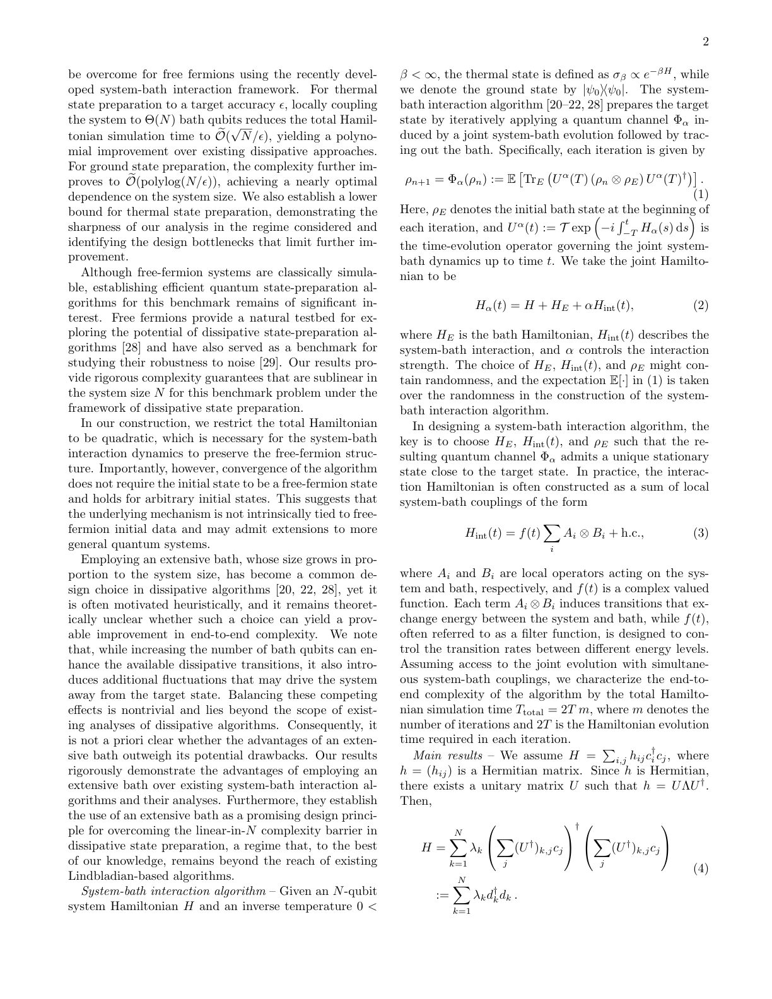
<figcaption class="paper-figure-caption"><b>Fig 1.</b> Low-resolution page preview, page 2</figcaption>
</figure>
<figure class="paper-figure-card">
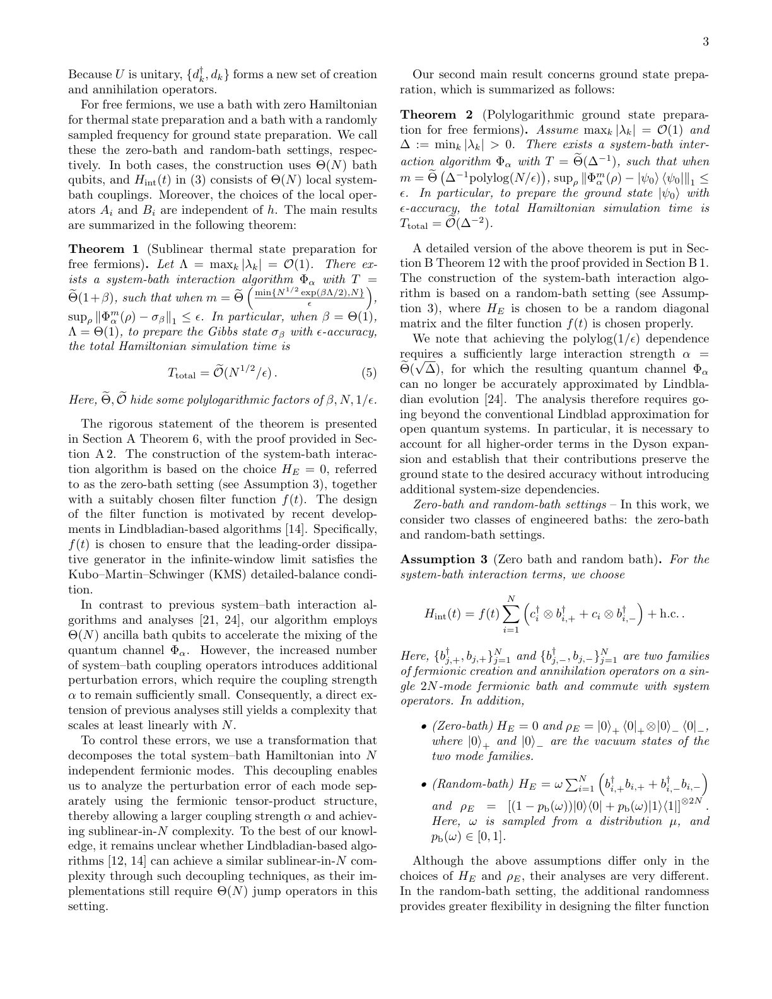
<figcaption class="paper-figure-caption"><b>Fig 2.</b> Low-resolution page preview, page 3</figcaption>
</figure>
<figure class="paper-figure-card">
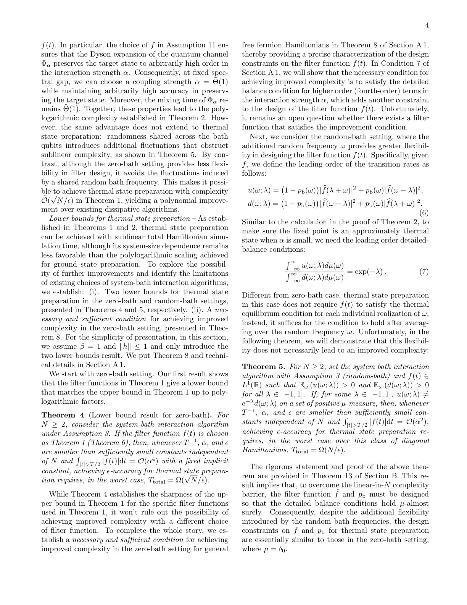
<figcaption class="paper-figure-caption"><b>Fig 3.</b> Low-resolution page preview, page 4</figcaption>
</figure>
<figure class="paper-figure-card">
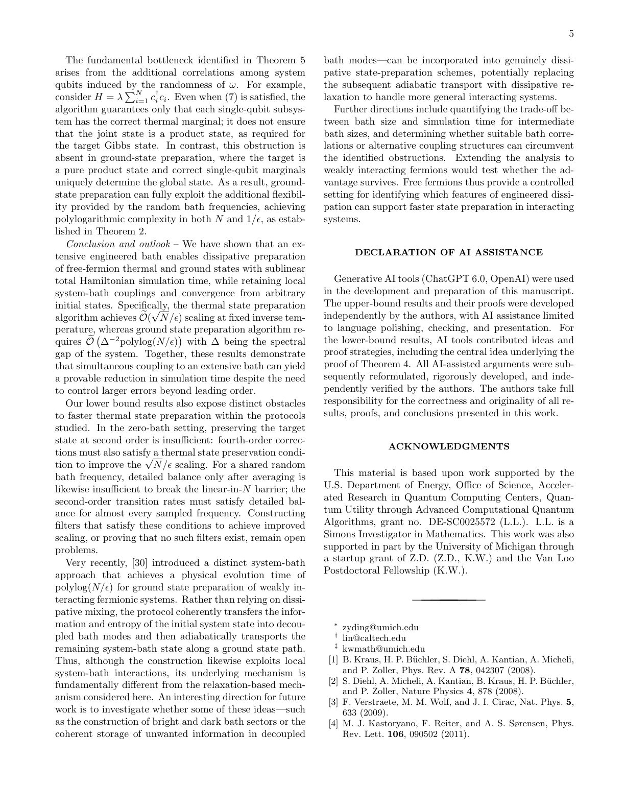
<figcaption class="paper-figure-caption"><b>Fig 4.</b> Low-resolution page preview, page 5</figcaption>
</figure>
<figure class="paper-figure-card">
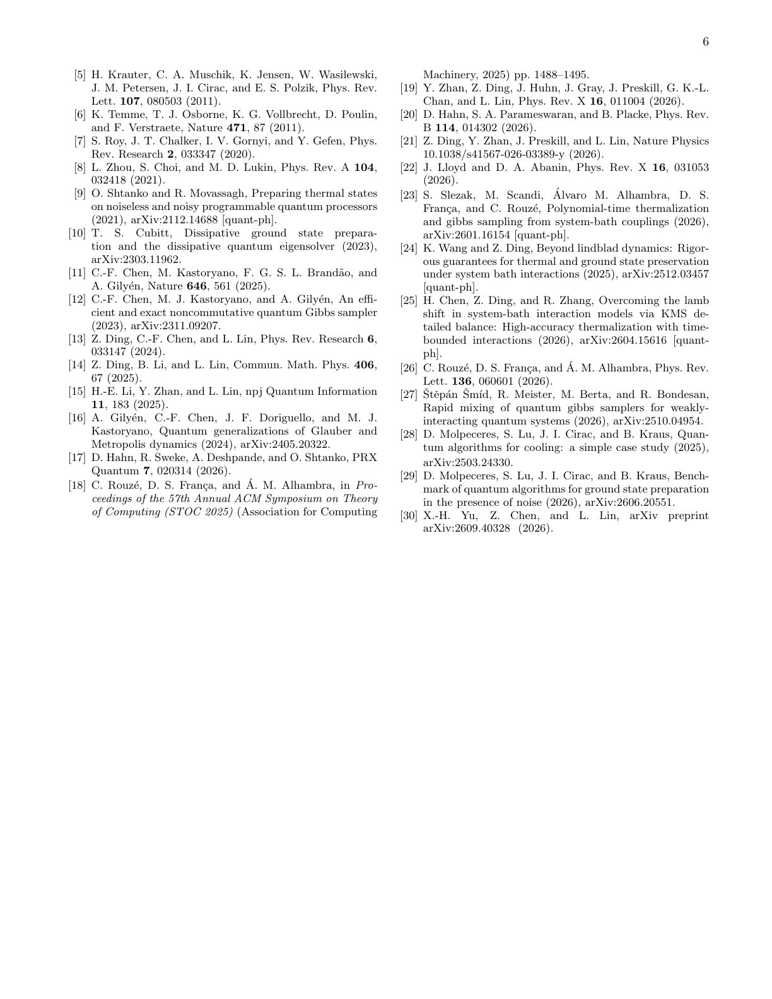
<figcaption class="paper-figure-caption"><b>Fig 5.</b> Low-resolution page preview, page 6</figcaption>
</figure>
</div>

<p><strong>Summary.</strong> This paper develops novel dissipative quantum algorithms to prepare thermal and ground states for free fermions with simulation times that scale sublinearly with system size. By engineering specific system-bath interactions, the authors break the previously established linear time barrier, providing significant theoretical advances for quantum simulation in statistical mechanics.</p>
<p><strong>Why it may be interesting.</strong> This work directly addresses the computational cost of simulating thermalization and equilibrium states, which is a central theme in non-equilibrium statistical mechanics and quantum simulation.</p>
<details>
<summary>Detailed structure</summary>
<p><strong>Main problem.</strong> The primary goal is to overcome the theoretical barrier of linear system-size ($N$) dependence in the total simulation time required for preparing thermal and ground states of free fermions using dissipative quantum dynamics.</p>
<p><strong>Main result.</strong> The authors achieve sublinear simulation time, $   ilde{O}(\sqrt{N}/\epsilon)$, for thermal state preparation and near-optimal polylogarithmic time for ground state preparation, establishing new complexity bounds.</p>
<p><strong>Method.</strong> The work employs engineered system-bath interactions, utilizing a bath whose size scales with the system size, and rigorously derives complexity bounds using quantum channel analysis and lower-bound techniques.</p>
<p><strong>Model / system.</strong> The model is free fermions described by a quadratic Hamiltonian, coupled to an engineered bath. The dynamics are governed by an iterative quantum channel $
ho_{n+1} = \Phi_\alpha(
ho_n)$ designed to drive the system towards the target thermal or ground state.</p>
<p><strong>Key observables.</strong> Trace-norm error ($\epsilon$), total Hamiltonian simulation time ($T_{	ext{total}}$), and the fidelity of the prepared state relative to the target Gibbs state ($\sigma_eta$).</p>
<p><strong>Important parameters / regimes.</strong> System size ($N$), inverse temperature ($eta$), coupling strength ($\alpha$), and the spectral gap ($\Delta$) of the system.</p>
<p><strong>Assumptions / limitations.</strong> The analysis relies on the free fermion nature of the system and involves approximations (like the Dyson series expansion) and the assumption of specific bath correlation properties to derive the bounds.</p>
<p><strong>Figures summary.</strong> Not specified in the provided notes.</p>
<p><strong>Paper structure.</strong> The paper progresses by first establishing the necessity of overcoming the $\Omega(N)$ barrier, then developing the sublinear preparation protocol for thermal states (Theorem 1), followed by the near-optimal protocol for ground states (Theorem 2), and finally establishing matching lower bounds (Theorem 4) to confirm the optimality of the derived upper bounds.</p>
</details>
<details>
<summary>Abstract</summary>
<p>Dissipative algorithms for preparing thermal and ground states typically require a total Hamiltonian simulation time that grows at least linearly with system size $N$, even when their mixing time grows only polylogarithmically. We achieve sublinear simulation time for free fermions by engineering local interactions with a bath whose size grows in proportion to the system size. Starting from arbitrary initial states, our thermal state preparation algorithm achieves trace-norm error $ε$ in total simulation time $\widetilde{O}(\sqrt{N}/ε)$ at fixed inverse temperature and bounded single-particle bandwidth, while ground state preparation of gapped systems requires only $\mathrm{polylog}(N/ε)$ time. We further establish lower bounds for thermal state preparation within the bath protocols considered, identifying two obstacles to faster preparation, namely fourth-order deviations from the target thermal state and fluctuations induced by a random frequency shared by all bath qubits. Our results demonstrate that the linear simulation time barrier in dissipative state preparation can be overcome and clarify the bath and filter-design constraints that govern further complexity improvements.</p>
</details>
<p><sub><a href="#top">↑ back to top</a></sub></p>

<p><a id="paper-2610.33927"></a></p>
<h3 id="interplay-between-network-heterogeneity-and-activation-thresholds-in-global-cascades"><a href="http://arxiv.org/abs/2610.33927v1">Interplay Between Network Heterogeneity and Activation Thresholds in Global Cascades</a></h3>
<p><strong>Authors:</strong> Aidan Meador-Woodruff, Gourab Ghoshal<br>
<strong>Type:</strong> theory · <strong>Category:</strong> statistical mechanics · <strong>PDF:</strong> <a href="https://arxiv.org/pdf/2610.33927v1">https://arxiv.org/pdf/2610.33927v1</a><br>
<strong>Analysis basis:</strong> full PDF text, analyzed in chunks
<strong>Topic relevance:</strong> <code>non-equilibrium universality</code> <strong>3/5</strong> · <code>analog quantum simulation</code> <strong>2/5</strong> · <code>driven-dissipative phase transition</code> <strong>2/5</strong> · <code>Keldysh / 2PI / non-Gaussian methods</code> <strong>1/5</strong> · <code>methods for driven-dissipative</code> <strong>1/5</strong> · <code>scars &amp; prethermalization</code> <strong>1/5</strong></p>
<div class="figure-strip-hint">↔ Scroll figures horizontally</div>
<div class="paper-figures-scroll">
<figure class="paper-figure-card">
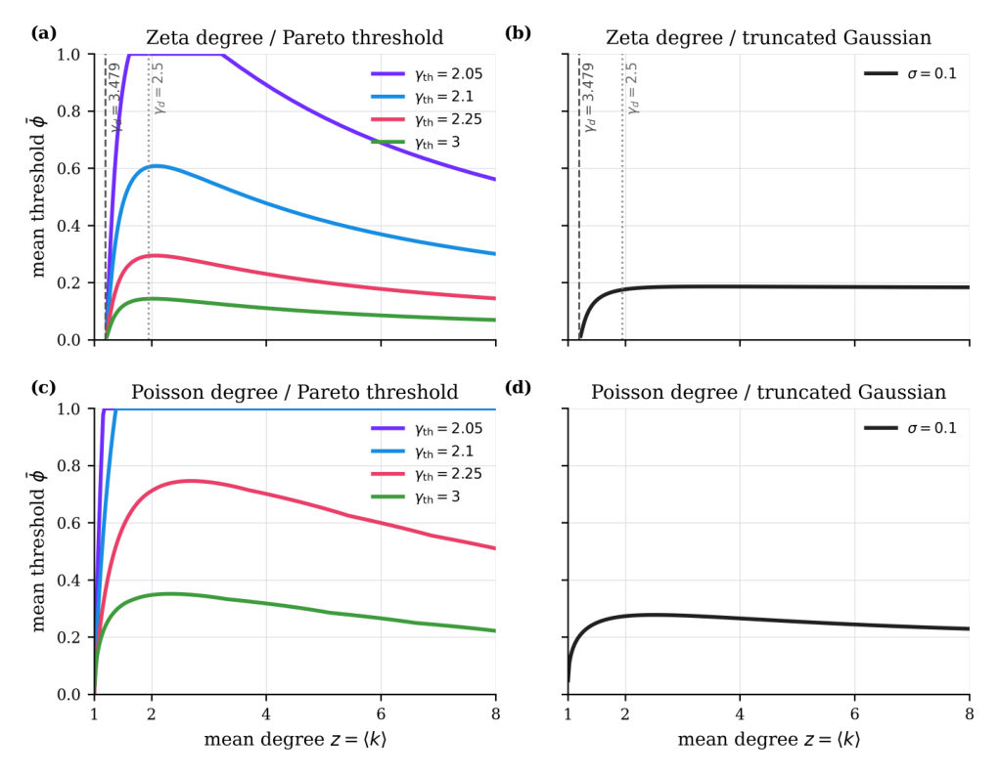
<figcaption class="paper-figure-caption"><b>Fig 1.</b> Figure 1. Contours of the vulnerable-cluster condition κ = 1 in the (z, ¯ϕ) plane for four combinations of degree and threshold distributions: (a) zeta degrees and Pareto thresholds, (b) zeta degrees and truncated Gaussian thresholds, (c) Poisson degrees and Pareto thresholds, and (d) Poisson degrees and truncated Gaussian thresholds. Pareto threshold exponents are γth = 2.05, 2.10, 2.25, 3.00; the truncated Gaussian has underlying scale parameter σ = 0.1. The vertical lines in the upper panels mark γd = 2.5 and the structural percolation threshold γ∗ d ≈3.479. The contours separate regions satisfying the infinitesimal-seed vulnerable-cluster condition κ &gt; 1 from those that do not. The...</figcaption>
</figure>
<figure class="paper-figure-card">
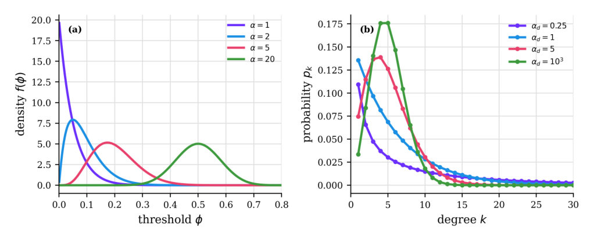
<figcaption class="paper-figure-caption"><b>Fig 2.</b> Figure 2. Examples of the beta and beta-binomial distributions at varying levels of heterogeneity. (a) shows beta threshold distributions with parameters Beta(1, 20), Beta(2, 20), Beta(5, 20), and the symmetric Beta(20, 20). These are the unscaled distributions; the cascade calculations use rescaled beta distributions with fixed mean ¯ϕ. (b) shows beta-binomial degree distributions with mean degree ⟨k⟩= 5 for αd = 0.25, 1, 5, 1000 with βd = 5, 20, 95, 105, illustrating the progression from strongly skewed to increasingly concentrated degree distributions.</figcaption>
</figure>
<figure class="paper-figure-card">
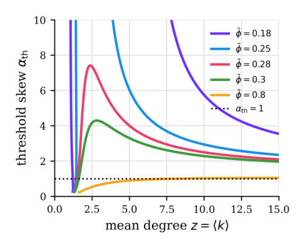
<figcaption class="paper-figure-caption"><b>Fig 3.</b> Figure 3. Contours of the vulnerable-cluster condition κ = 1 in the (z, αth) plane for Erdős–Rényi networks at differ- ent mean thresholds ¯ϕ. The dotted horizontal line marks αth = 1, separating regimes of increasing and decreasing vulnerable branching in the large-connectivity limit. The colored contours delimit parameter regions satisfying κ &gt; 1 and illustrate the dependence of finite-connectivity cascade windows on the mean activation threshold. The condition κ &gt; 1 establishes the possibility of extensive propagation from infinitesimal seeds, but does not specify the probabil- ity or final size of a cascade.</figcaption>
</figure>
<figure class="paper-figure-card">
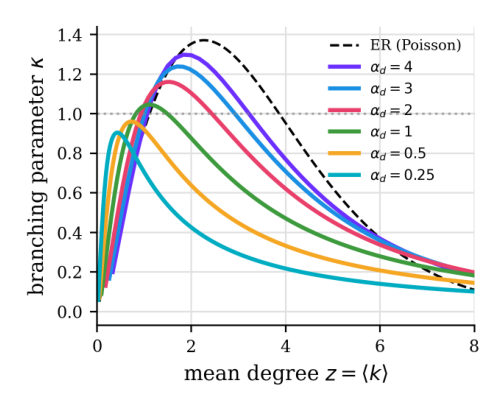
<figcaption class="paper-figure-caption"><b>Fig 4.</b> Figure 4. Cascade parameter κ as a function of mean degree z for beta-binomial degree distributions with different values of αd, fixed βd = 20, and constant activation threshold ¯ϕ = 0.25. Mean connectivity is varied through the maximum degree n, with z = nαd/(αd + βd). The dashed black curve shows the Poisson-network reference, while the horizontal line κ = 1 marks the vulnerable-cluster onset condition. For the parameters shown, decreasing αd reduces the range of connectivity over which κ &gt; 1.</figcaption>
</figure>
<figure class="paper-figure-card">
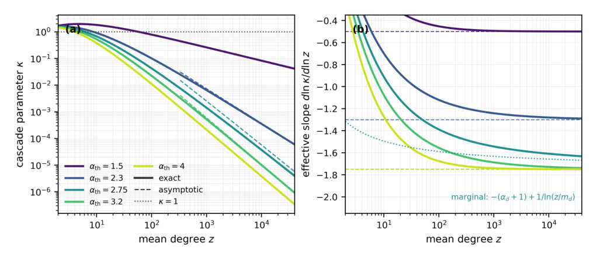
<figcaption class="paper-figure-caption"><b>Fig 5.</b> Figure 5. Competition between threshold and degree heterogeneity in the doubly tunable model. Degrees follow the beta- binomial distribution with αd = 0.75 and βd = 3, while thresholds follow the rescaled beta distribution with βth = 3 and mean ¯ϕ = 0.2. The boundary between the two asymptotic decay mechanisms is αth = αd + 2 = 2.75. (a) Cascade parameter κ versus mean degree z for αth = 1.5, 2.3, 2.75, 3.2, 4.0. Solid curves are exact finite-n sums, and dashed curves are the leading analytical asymptotes, including their prefactors, with near perfect overlap for αth = 3.2 and 4. The dotted horizontal line marks κ = 1. (b) Effective logarithmic slopes d ln κ/d ln z calculated from the exact...</figcaption>
</figure>
</div>

<p><strong>Summary.</strong> This work analyzes the conditions for global cascade propagation in complex networks by modeling the interaction between network structure and individual activation thresholds. Using the Watts threshold model, the authors derive critical boundaries that dictate whether cascades are enhanced or suppressed as network connectivity increases. The findings provide a detailed understanding of how the interplay between structural and dynamic heterogeneity governs collective behavior.</p>
<p><strong>Why it may be interesting.</strong> While focused on classical network dynamics, the mathematical techniques involving critical exponents, phase transitions (percolation thresholds $\kappa=1$), and asymptotic scaling laws are highly relevant to understanding non-equilibrium dynamics in quantum many-body systems.</p>
<details>
<summary>Detailed structure</summary>
<p><strong>Main problem.</strong> The paper investigates how the interplay between network heterogeneity (degree distribution) and activation threshold heterogeneity determines the onset and suppression of global cascades in complex networks.</p>
<p><strong>Main result.</strong> The cascade parameter exhibits distinct asymptotic behaviors depending on whether the threshold distribution or the degree distribution dominates the large-connectivity limit, leading to different scaling laws for global propagation.</p>
<p><strong>Method.</strong> The analysis uses the Watts threshold model and employs systematic variations of heterogeneity using Beta and Beta-binomial distributions, focusing on asymptotic analysis of the branching parameter $\kappa$.</p>
<p><strong>Model / system.</strong> The model is a complex network subjected to a threshold activation process, analyzed in the infinitesimal seed limit. Heterogeneity is controlled by assuming Beta-distributed activation thresholds and Beta-binomial degree distributions.</p>
<p><strong>Key observables.</strong> The branching parameter $\kappa$, which must exceed 1 for global cascades to occur, and the asymptotic scaling of $\kappa$ with network connectivity ($z$).</p>
<p><strong>Important parameters / regimes.</strong> The shape parameters of the threshold ($\alpha_{th}$) and degree distributions ($\alpha_d, \beta_d$), and the mean threshold $\bar{\phi}$.</p>
<p><strong>Assumptions / limitations.</strong> The network is assumed to be uncorrelated, locally tree-like, and the analysis is restricted to the infinitesimal-seed limit, ignoring degree correlations.</p>
<p><strong>Figures summary.</strong> Figures illustrate $\kappa=1$ contours in parameter planes (e.g., $(z, \bar{\phi})$ or $(z, \alpha_{th})$) for various network and threshold combinations, showing the critical boundaries.</p>
<p><strong>Paper structure.</strong> The paper systematically analyzes the cascade parameter $\kappa$ by varying the distributions governing node thresholds and network degrees. It identifies two distinct boundaries governing large-connectivity behavior, leading to different asymptotic scaling regimes.</p>
</details>
<details>
<summary>Abstract</summary>
<p>The onset of global cascades in complex networks depends on both the distribution of activation thresholds and the underlying network topology. Here we investigate how these two sources of heterogeneity interact within the Watts threshold model, using beta-distributed activation thresholds and beta-binomial degree distributions to systematically vary their respective properties. Analyzing the onset of cascades from infinitesimal seeds, we identify two distinct boundaries governing the large-connectivity behavior of vulnerable branching. The first separates regimes in which increasing connectivity enhances or suppresses propagation, depending on the abundance of individuals with low activation thresholds. The second distinguishes two mechanisms of suppression: one controlled by the scarcity of low-threshold individuals and the other by the diminishing abundance of low-degree nodes as connectivity increases. At the boundary between these mechanisms, their competing contributions produce a logarithmic correction to the asymptotic scaling. Our results demonstrate how the interplay between network structure and individual activation thresholds determines the conditions for extensive propagation.</p>
</details>
<p><sub><a href="#top">↑ back to top</a></sub></p>

<p><a id="paper-2610.33383"></a></p>
<h3 id="distributional-statistics-of-nonequilibrium"><a href="http://arxiv.org/abs/2610.33383v1">Distributional statistics of nonequilibrium</a></h3>
<p><strong>Authors:</strong> Harrison Hartle, Aanjaneya Kumar, David H. Wolpert<br>
<strong>Type:</strong> theory · <strong>Category:</strong> statistical mechanics · <strong>PDF:</strong> <a href="https://arxiv.org/pdf/2610.33383v1">https://arxiv.org/pdf/2610.33383v1</a><br>
<strong>Analysis basis:</strong> full PDF text, analyzed in chunks
<strong>Topic relevance:</strong> <code>non-equilibrium universality</code> <strong>3/5</strong> · <code>Keldysh / 2PI / non-Gaussian methods</code> <strong>2/5</strong> · <code>analog quantum simulation</code> <strong>1/5</strong> · <code>driven-dissipative phase transition</code> <strong>1/5</strong> · <code>methods for driven-dissipative</code> <strong>1/5</strong> · <code>quantum measurements</code> <strong>1/5</strong></p>
<div class="figure-strip-hint">↔ Scroll figures horizontally</div>
<div class="paper-figures-scroll">
<figure class="paper-figure-card">
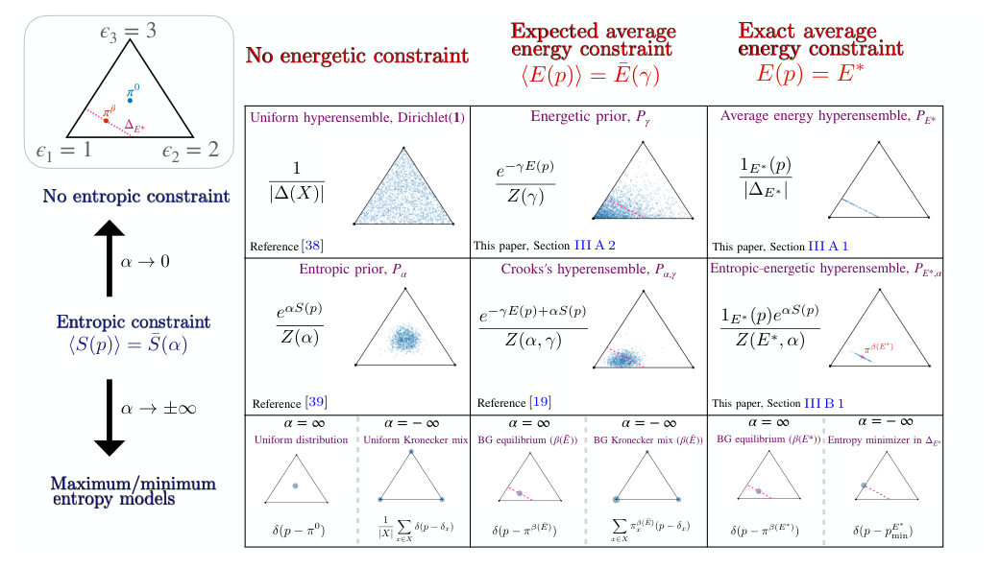
<figcaption class="paper-figure-caption"><b>Fig 1.</b> FIG. 1. Hyperensembles that maximize S(P) subject to constraints on average energy E(p) and Shannon entropy S(p) of p ∼P. Each panel depicts the form of P(p) alongside samples p ∼P in the unit simplex of distributions over X = {1, 2, 3} with energies ϵx = x. We consider two forms of constraint on average energy E(p), either setting its hyperensemble expectation to E (middle column), or setting its exact value to E∗(right column). We also consider an expectation constraint on Shannon entropy (middle row) yielding P(p) ∝eαS(p) with Lagrange multiplier α; this includes the entropic prior Pα, Crooks’s hyperensemble Pα,γ and the entropic-energetic hyperensemble PE∗,α. The limit α = 0 (upper row)...</figcaption>
</figure>
<figure class="paper-figure-card">
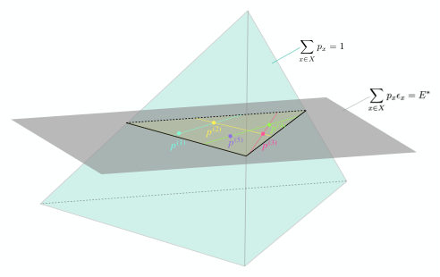
<figcaption class="paper-figure-caption"><b>Fig 2.</b> FIG. 2. The hit-and-run algorithm HR(∆E∗) to sample hy- perensemble PE∗; details are covered in Appendix C.</figcaption>
</figure>
<figure class="paper-figure-card">
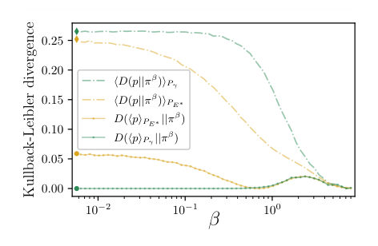
<figcaption class="paper-figure-caption"><b>Fig 3.</b> FIG. 3. Kullback-Leibler divergences ⟨D(p||πβ)⟩P , and D(⟨p⟩P ||πβ) for both energy-constrained hyperensembles, PE∗and Pγ, under parameter matchings of Sec. III C 1. Dis- played is the case of n = 3 with ϵx = x, with means computed from 105 steps of MCMC sampling (Appendices C, F). Dashed curves: mean KL divergence to πβ for random distributions; dotted curves: KL divergence of the mean distribution to πβ. Associated theoretical values at β = 0 (Appendix G) are dis- played to the left of the curves.</figcaption>
</figure>
<figure class="paper-figure-card">
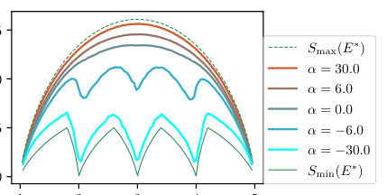
<figcaption class="paper-figure-caption"><b>Fig 4.</b> FIG. 4. Mean Shannon entropy S versus E∗for ran- dom probability distributions from the hyperensemble PE∗,α (Sec. III B 1) at several values of α, with n = 5 and ener- gies ϵx = x. The value of S for α ≫0 is near Smax(E∗), the Boltzmann-Gibbs value; for α ≪0 it is near Smin(E∗) (Eq. (36)), varying non-monotonically with E∗. The mean entropy is computed from 2 × 105 steps of MCMC sampling (Appendices C, F).</figcaption>
</figure>
<figure class="paper-figure-card">
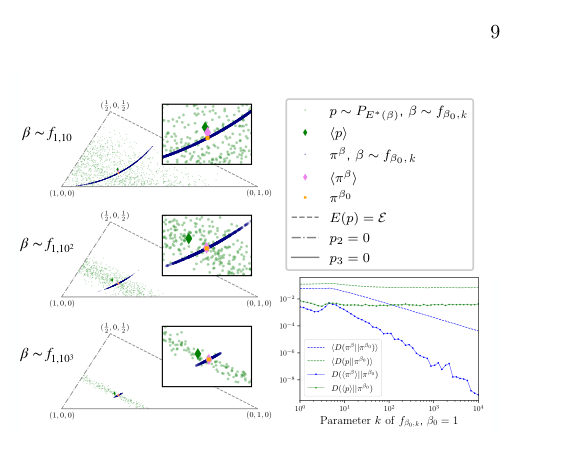
<figcaption class="paper-figure-caption"><b>Fig 5.</b> FIG. 5. Random samples and the mean distribution from the fβ0,k-superstatistics model and the associated mixed-PE∗hy- perensemble (Sec. IV A 1), for the case of n = 3 with energies ϵx = x. The left three visualizations are at β0 = 1 and k = 10 (upper) k = 102 (middle) and k = 103 (lower). The region of the unit simplex displayed corresponds to β ≥0 or equiv- alently E∗≤E = 2. Insets display the region around πβ0. Lower right: KL divergence, on average, and of the mean dis- tribution, to πβ0, in both models. For superstatistics, both converge to zero as a function of the concentration parameter k →∞. For the mixture hyperensemble, both converge to their values in PE∗with E∗= E(πβ0) (see Sec....</figcaption>
</figure>
</div>

<p><strong>Summary.</strong> This paper develops a general hyperensemble framework to model uncertainty over probability distributions constrained by physical quantities like energy or entropy. It generalizes existing methods by using maximum entropy principles at the hyperensemble level. The framework predicts equilibrium states and allows for the rigorous description of tunable, non-equilibrium statistical regimes.</p>
<p><strong>Why it may be interesting.</strong> The rigorous mathematical treatment of epistemic uncertainty in statistical mechanics, especially the generalization of the ensemble concept to a hyperensemble, provides powerful tools for modeling non-equilibrium steady states beyond standard equilibrium assumptions.</p>
<details>
<summary>Detailed structure</summary>
<p><strong>Main problem.</strong> The paper establishes a general reference modeling framework for determining the probability density over possible probability distributions (a hyperensemble) when only constraints on physical quantities are known.</p>
<p><strong>Main result.</strong> The framework shows that imposing constraints on average energy uniquely determines the Boltzmann-Gibbs equilibrium, while allowing for tunable nonequilibrium regimes by constraining Shannon entropy.</p>
<p><strong>Method.</strong> The core method involves maximizing the differential entropy of the hyperensemble subject to various constraints (e.g., fixed average energy or fixed entropy), following Jaynesian model selection logic.</p>
<p><strong>Model / system.</strong> The model concerns probability distributions $p$ over a finite set of microstates $X$, where the uncertainty is modeled by a prior probability density $P(p)$ over the unit simplex $\Delta(X)$.</p>
<p><strong>Key observables.</strong> Shannon entropy $S(p)$, average energy $E(p)$, and the Kullback-Leibler divergence $D(p||\pi_eta)$.</p>
<p><strong>Important parameters / regimes.</strong> The inverse temperature parameter $eta$, and the constraint parameters $\gamma$ (for energy) and $\alpha$ (for entropy).</p>
<p><strong>Assumptions / limitations.</strong> The framework assumes the ability to define and sample from the hyperensemble $P(p)$ based on imposed constraints, which are treated as exact or expected values.</p>
<p><strong>Figures summary.</strong> Figures illustrate the mathematical forms of various hyperensembles ($P(p)$) based on energy and entropy constraints, and show the limiting behavior of divergence measures in extreme temperature regimes.</p>
<p><strong>Paper structure.</strong> The paper develops the general framework by defining the hyperensemble $P(p)$, deriving the mathematical forms for energy-constrained and entropy-constrained ensembles, and then analyzing the physical predictions and limiting behaviors (e.g., $eta 	o 0$ and $eta 	o \infty$).</p>
</details>
<details>
<summary>Abstract</summary>
<p>We establish a reference modeling framework for random probability distributions subject to constraints. Generalizing the hyperensemble approach of Crooks, we formulate Jaynesian priors of maximal uncertainty over the unit simplex of categorical distributions. This framework is entirely general, but we primarily investigate models with constraints on physically relevant quantities, namely, average energy and Shannon entropy. A constraint on the exact value of average energy uniquely determines a Boltzmann-Gibbs equilibrium, but also defines a hyperplanar subset of the probability simplex consisting of all distributions with that value of average energy. The associated hyperensemble has a uniform probability density across all such distributions, regardless of distance to equilibrium. Such reference models make predictions of generic nonequilibrium properties such as the mean and modal microstate distributions and the expected free energy of a random distribution, which we examine analytically and via exact sampling algorithms. Moreover, introducing constraints on Shannon entropy permits parametric access to tunably nonequilibrium regimes. The approach follows conventional Jaynesian modeling logic and is compatible with standard Bayesian inference, and reduces to Boltzmann-Gibbs statistics when Shannon entropy is maximized. We examine the physical predictions of this scheme, and demonstrate its wide compatibility with other approaches to nonequilibrium modeling. We illustrate the framework in three scenarios: (i) comparison to superstatistics quasi-equilibrium modeling, (ii) generation of random nonequilibrium steady states, and (iii) Bayesian inference under a prior hyperensemble. We highlight numerous prospects for theoretical extensions and empirical application.</p>
</details>
<p><sub><a href="#top">↑ back to top</a></sub></p>

<p><a id="paper-2610.33436"></a></p>
<h3 id="dynamic-pseudogap-model-analytic-results-vs-monte-carlo-numerics"><a href="http://arxiv.org/abs/2610.33436v1">Dynamic Pseudogap Model: Analytic Results vs Monte Carlo Numerics</a></h3>
<p><strong>Authors:</strong> Michael V. Sadovskii<br>
<strong>Type:</strong> theory · <strong>Category:</strong> disordered systems and neural networks · <strong>PDF:</strong> <a href="https://arxiv.org/pdf/2610.33436v1">https://arxiv.org/pdf/2610.33436v1</a><br>
<strong>Analysis basis:</strong> full PDF text, analyzed in chunks
<strong>Topic relevance:</strong> <code>methods for driven-dissipative</code> <strong>3/5</strong> · <code>Keldysh / 2PI / non-Gaussian methods</code> <strong>2/5</strong> · <code>analog quantum simulation</code> <strong>1/5</strong> · <code>correlated / nonlocal dissipation</code> <strong>1/5</strong> · <code>driven-dissipative phase transition</code> <strong>1/5</strong> · <code>non-equilibrium universality</code> <strong>1/5</strong></p>
<div class="figure-strip-hint">↔ Scroll figures horizontally</div>
<div class="paper-figures-scroll">
<figure class="paper-figure-card">
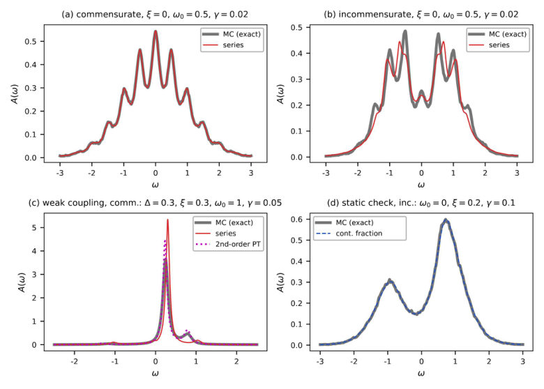
<figcaption class="paper-figure-caption"><b>Fig 1.</b> FIG. 1. Spectral density: consistency checks. (a) Commensurate case, ξ = 0, ω0 = 0.5, γ = 0.02: the series is exact. (b) Incommensurate case, same parameters: small deviations from the non-Abelian term. (c) Weak coupling ∆= 0.3, ξ = 0.3, ω0 = 1, γ = 0.05: MC (grey), series (red), second-order perturbation theory (green dotted). (d) Static check (ω0 = 0, incommensurate, ξ = 0.2, γ = 0.1): MC against the continued fraction.</figcaption>
</figure>
<figure class="paper-figure-card">

<figcaption class="paper-figure-caption"><b>Fig 2.</b> FIG. 2. Spectral density: commensurate case, ω0 = 0.1.</figcaption>
</figure>
<figure class="paper-figure-card">

<figcaption class="paper-figure-caption"><b>Fig 3.</b> FIG. 3. Spectral density: commensurate case, ω0 = 0.5. Dashed green lines show here and below the data obtained from double series with no Γeffsubtraction in ∆nm.</figcaption>
</figure>
<figure class="paper-figure-card">

<figcaption class="paper-figure-caption"><b>Fig 4.</b> FIG. 4. Spectral density: incommensurate case.</figcaption>
</figure>
<figure class="paper-figure-card">

<figcaption class="paper-figure-caption"><b>Fig 5.</b> FIG. 5. Spectral density: incommensurate case, γ dependence and static check.</figcaption>
</figure>
</div>

<p><strong>Summary.</strong> This work rigorously compares analytic predictions for the spectral density in a dynamic pseudogap model against exact Monte Carlo simulations. By analyzing different fluctuation regimes, the authors map out the precise limits of validity for various theoretical approximations. The findings confirm the physical picture of pseudogap formation while establishing the necessary conditions for the reliability of analytical methods.</p>
<p><strong>Why it may be interesting.</strong> The rigorous comparison between analytical approximations and exact numerical solutions in a strongly fluctuating, disordered environment provides crucial insight into the breakdown points of standard theoretical tools for correlated electron systems.</p>
<details>
<summary>Detailed structure</summary>
<p><strong>Main problem.</strong> The paper compares analytic theoretical results for the spectral density of an electron in a dynamic pseudogap model against exact Monte Carlo (MC) numerical solutions.</p>
<p><strong>Main result.</strong> Analytic expressions show satisfactory agreement with MC numerics within their respective limits, confirming the qualitative picture of dynamic pseudogap formation, though the MC approach reveals limitations in the analytic approximations.</p>
<p><strong>Method.</strong> The study employs both analytical techniques (double Poisson series, continued fraction) and numerical simulations (Monte Carlo) to calculate the electron Green's function and spectral density.</p>
<p><strong>Model / system.</strong> The model describes an electron scattered by random time-dependent Gaussian fluctuations (representing charge or spin density waves) characterized by a nesting vector Q, oscillation frequency $\omega_0$, and damping $\gamma$.</p>
<p><strong>Key observables.</strong> Spectral density $A(\omega)$, Density of States (DOS), and the main quasiparticle-like peak parameters (position, height, FWHM).</p>
<p><strong>Important parameters / regimes.</strong> Fluctuation parameters ($\omega_0, \gamma$), momentum/spatial parameter ($\xi$), and the coherence rate $\Gamma_{	ext{eff}}$.</p>
<p><strong>Assumptions / limitations.</strong> The analytic approach relies on approximations like neglecting Magnus-type corrections and assuming specific regimes (coherent vs. quasistatic).</p>
<p><strong>Figures summary.</strong> Figures compare the spectral density and DOS from the series expansion against MC results across various parameter regimes, highlighting points of agreement and divergence.</p>
<p><strong>Paper structure.</strong> The paper systematically compares the results from the double Poisson series (coherent regime) and the continued fraction solution (quasistatic limit) against the benchmark MC solution, analyzing the crossover region and identifying the parameter space where each method is valid.</p>
</details>
<details>
<summary>Abstract</summary>
<p>Recently proposed dynamic pseudogap model analytical results for spectral density of an electron scattered by random time-dependent Gaussian field representing fluctuations with finite nesting vector ${\bf Q}$, characteristic oscillation frequency $ω_0$ and damping $γ$, leading to pseudogap formation, are compared with exact numerical solution by Monte Carlo (MC) approach. We consider both commensurate (real) and incommensurate (complex) fluctuations, for a wide range of parameters of the model. Electron Green's function is approximated either by a double Poisson series with history-dependent Bogoliubov gaps or by exact static continued fraction solution. In the coherent regime double-series representation provides description of dynamic sideband formation in the spectral density. As coherence is progressively lost, the theory crosses over to the quasistatic fluctuating-gap regime described by the exact continued-fraction solution. The exact MC solution overcomes the limitations of analytic approach, such as neglect of Magnus-type corrections in commuting approximation, and establish the limits of analytic approach, as well as confirming the exactness of continued fraction solution in static limit. In general, analytic expressions demonstrate rather satisfactory agreement with exact MC numerics within their limits, confirming the overall qualitative physical picture of dynamic pseudogap formation.</p>
</details>
<p><sub><a href="#top">↑ back to top</a></sub></p>

<p><a id="paper-2610.34568"></a></p>
<h3 id="extremal-and-global-time-statistics-of-sluggish-random-walks-with-stochastic-resetting"><a href="http://arxiv.org/abs/2610.34568v1">Extremal and global-time statistics of sluggish random walks with stochastic resetting</a></h3>
<p><strong>Authors:</strong> Theophilus Dwamena Frimpong<br>
<strong>Type:</strong> theory · <strong>Category:</strong> statistical mechanics · <strong>PDF:</strong> <a href="https://arxiv.org/pdf/2610.34568v1">https://arxiv.org/pdf/2610.34568v1</a><br>
<strong>Analysis basis:</strong> full PDF text, analyzed in chunks
<strong>Topic relevance:</strong> <code>non-equilibrium universality</code> <strong>3/5</strong> · <code>Keldysh / 2PI / non-Gaussian methods</code> <strong>2/5</strong> · <code>methods for driven-dissipative</code> <strong>2/5</strong> · <code>correlated / nonlocal dissipation</code> <strong>1/5</strong> · <code>driven-dissipative phase transition</code> <strong>1/5</strong></p>
<div class="figure-strip-hint">↔ Scroll figures horizontally</div>
<div class="paper-figures-scroll">
<figure class="paper-figure-card">

<figcaption class="paper-figure-caption"><b>Fig 1.</b> Figure 1: Distribution of the maximum MT of the sluggish random walk with Poissonian resetting. (A)–(C) Probability density pr(M, T) at r = 1 and weak (rT = 0.3), intermediate (rT = 3) and frequent (rT = 30) resetting, for sluggishness parameters α = {0, 0.5, 1.5} (see legend). (D) Collapse of the distribution function Prob[MT &lt; M] at rT = 3 as a function of rµM, for rates r = {0.25, 1, 4} (see legend). Symbols are obtained from numerical simulations started at the origin, with N = 106 simulated trajectories per curve, generated in 10 independent blocks, with error bars given by the standard error across blocks, and lines are given by the numerical inversion of Eq. (21) (at r = 1 in (D)).</figcaption>
</figure>
<figure class="paper-figure-card">

<figcaption class="paper-figure-caption"><b>Fig 2.</b> Figure 2: Moments and Gumbel limit of the maximum MT at r = 1. (A) Mean and (B) standard deviation of MT as functions of rT, and (C) distribution function of the centered variable ζmax −aT at rT = 103, for α = 0, 0.5 and 1.5 (see legend). Symbols are obtained from N = 106 simulated trajectories per point, generated in 10 independent blocks, with error bars given by the standard error across blocks. Solid lines are given by the numerical inversion of Eq. (30) and of its second-moment analogue in (A) and (B), and by the standard Gumbel law in (C). Dotted lines show the reset-free growth CµT µ, Eq. (31), and dashed lines the large-rT law X  (aT + γE)/√r  in (A) and the Gumbel width, Eq....</figcaption>
</figure>
<figure class="paper-figure-card">

<figcaption class="paper-figure-caption"><b>Fig 3.</b> Figure 3: Large deviations of the maximum MT at r = 1. (A) Rate −T −1 ln Prob[y(MT) &gt; wT] for α = 1.5 at T = {10, 20, 40} (see legend), from the numerical inversion of Eq. (21) in extended precision, approaching the rate function Φ(w), Eq. (35) (dashed line). The dotted vertical line marks wc = 2√r. (B) The same rate at T = 40 for α = {0, 0.5, 1.5} (see legend).</figcaption>
</figure>
<figure class="paper-figure-card">

<figcaption class="paper-figure-caption"><b>Fig 4.</b> Figure 4: Distribution of the time of the maximum, T p(tM|T), as a function of tM/T at weak (rT = 0.3, (A)), intermediate (rT = 3, (B)) and frequent (rT = 30, (C)) resetting, for sluggishness parameters α = {0, 0.5, 1.5} (see legend). Symbols are averages over 20 equal bins of N = 106 simulated trajectories, generated in 10 independent blocks, with error bars given by the standard error across blocks. In the two outermost bins, where the density diverges, the horizontal bars show the exact bin averages obtained by integrating the density over the bin. Solid lines are given by Eq. (41) in the time domain. Dotted lines show the reset-free law (r →0) of the same color, which is the arcsine law...</figcaption>
</figure>
<figure class="paper-figure-card">

<figcaption class="paper-figure-caption"><b>Fig 5.</b> Figure 5: Boundary layers of the time of the maximum at rT = 103, for sluggishness parameters α = {0, 0.5, 1.5} (see legend). (A) Left layer: T p(tM|T) near tM = 0 as a function of tM in units of 1/r. (B) Right layer: T p(tM|T) near tM = T as a function of ρ = r(T −tM). Symbols are binned averages of N = 106 simulated trajectories, generated in 10 independent blocks, with error bars given by the standard error across blocks. Solid lines are given by the exact law, and dashed lines show the climbing-time form, Eq. (47), in (A) and κ(ρ), Eq. (46), in (B).</figcaption>
</figure>
</div>

<p><strong>Summary.</strong> This paper analyzes the extreme statistics of a sluggish random walk whose movement is hindered by position-dependent diffusivity and periodically reset to the origin. By mapping the process to a Bessel process, the authors derive that the maximum value follows Gumbel statistics at long times. The results provide exact scaling laws for the maximum and global times, extending known results from simple Brownian motion to more complex, non-uniform diffusion regimes.</p>
<p><strong>Why it may be interesting.</strong> The techniques developed for analyzing extreme value statistics in non-Markovian, non-stationary processes (like sluggish walks) under external driving (resetting) are highly relevant for understanding non-equilibrium dynamics in complex quantum systems.</p>
<details>
<summary>Detailed structure</summary>
<p><strong>Main problem.</strong> The study focuses on determining the extremal and global-time statistics of a one-dimensional sluggish random walk subjected to stochastic resetting at the origin.</p>
<p><strong>Main result.</strong> The maximum of the process follows the Gumbel law at long times, and the typical maximum scales as a power of the logarithm of the window length, regardless of the diffusivity decay parameter $\alpha$.</p>
<p><strong>Method.</strong> The analysis employs renewal theory after mapping the sluggish walk to a signed Bessel process, utilizing Laplace transforms and pole identification in the complex plane for long-time asymptotics.</p>
<p><strong>Model / system.</strong> The model is a one-dimensional random walk where the diffusivity decays as a power law $D(x) = |x|^{-\alpha}$, coupled with Poissonian resetting to the origin. This leads to a PDE solved via mapping to a signed Bessel process.</p>
<p><strong>Key observables.</strong> Maximum value ($M_T$), time of maximum ($t_M$), and last-passage time through the origin ($t_l$).</p>
<p><strong>Important parameters / regimes.</strong> Diffusivity decay exponent $\alpha$, resetting rate $r$, and observation window length $T$.</p>
<p><strong>Assumptions / limitations.</strong> The analysis assumes a Poissonian resetting process and utilizes the continuum limit PDE formulation for the walk.</p>
<p><strong>Figures summary.</strong> Not specified, but the notes reference Figure 2 for comparison with simulations.</p>
<p><strong>Paper structure.</strong> The paper proceeds by mapping the sluggish walk to a Bessel process, deriving the Laplace transform of the maximum distribution using renewal theory, and analyzing the long-time limits for the maximum, time of maximum, and last-passage time.</p>
</details>
<details>
<summary>Abstract</summary>
<p>We study the extremal and global-time statistics of a one-dimensional sluggish random walk, whose diffusivity decays as a power law of the distance from the origin, under Poissonian resetting to the origin. A change of variable maps the process onto a signed Bessel process, so that renewal theory applies. We obtain the exact Laplace transform of the distribution of the maximum over a finite window. At long times the centered maximum of the transformed process follows the Gumbel law, and in physical space the typical maximum grows as a power of the logarithm of the window length. The far-tail rate function does not depend on $α$ in the Bessel variable, so the second-order dynamical transition known for Brownian resetting, between maxima produced by a single anomalously long inter-reset interval and maxima produced by an interval occupying essentially the whole window, holds for every $α$. The time of the maximum is uniformly distributed in the bulk of the window, with boundary layers that shift its mean above the midpoint logarithmically in the window length. The last-passage time through the origin has an exact density, and the time elapsed since it converges to a Gamma law. Reflection symmetry makes the occupation time of the positive half-line and the last-passage time uncorrelated. The results reduce to the Brownian case and agree with simulations.</p>
</details>
<p><sub><a href="#top">↑ back to top</a></sub></p>

<p><a id="paper-2610.35016"></a></p>
<h3 id="from-single-spins-to-ensembles-a-calibrated-symbolic-regression-pipeline-for-nv-spectroscopy"><a href="http://arxiv.org/abs/2610.35016v1">From Single Spins to Ensembles: A Calibrated Symbolic Regression Pipeline for NV Spectroscopy</a></h3>
<p><strong>Authors:</strong> Evan Zhang, Zhenghang Zhi, Zewei Wang, Zeheng Wang<br>
<strong>Type:</strong> both · <strong>Category:</strong> disordered systems and neural networks · <strong>PDF:</strong> <a href="https://arxiv.org/pdf/2610.35016v1">https://arxiv.org/pdf/2610.35016v1</a><br>
<strong>Analysis basis:</strong> full PDF text, analyzed in chunks
<strong>Topic relevance:</strong> <code>QC/QI experiment</code> <strong>3/5</strong> · <code>methods for driven-dissipative</code> <strong>3/5</strong> · <code>analog quantum simulation</code> <strong>1/5</strong> · <code>quantum measurements</code> <strong>1/5</strong> · <code>quantum optics experiment</code> <strong>1/5</strong></p>
<div class="figure-strip-hint">↔ Scroll figures horizontally</div>
<div class="paper-figures-scroll">
<figure class="paper-figure-card">

<figcaption class="paper-figure-caption"><b>Fig 1.</b> FIG. 1. Single-center structure and ensemble spectral composition. (a) Scripted rendering of an ideal diamond lattice with substitutional nitrogen (N), its nearest-neighbor vacancy (V), carbon atoms (C), and the NV symmetry axis along a ⟨111⟩ direction. The open cage denotes the vacant lattice site. (b) A schematic diamond fragment containing NV centers along the four tetrahedral orientations illustrates how local environments and orientation enter the ensemble description. (c) Ground-state spin-level diagram showing the zero-field splitting D and the local Zeeman, transverse-splitting, and hyperfine contributions. (d) Selected local operators, site parameters, and orientation transforms...</figcaption>
</figure>
<figure class="paper-figure-card">

<figcaption class="paper-figure-caption"><b>Fig 2.</b> FIG. 2. Calibrated pathway from single NV centers to ensemble spectra. (a) Constrained symbolic regression selects operator expressions and fits continuous coefficients; the resulting local expressions are frozen before calibrated composition. (b) Source-specific supports and nuclear coefficients are inherited, while target shifts, disorder, mixture, and readout are calibrated. This separation retains the single-center model structure across different specimens. (c) Spectral observations in each experimental task and all three simulated conditions per seed. Center A contains 27 CW and 60 pulsed points; center B contains 31 CW and 179 pulsed points. Experimental prediction uses four cyclic...</figcaption>
</figure>
<figure class="paper-figure-card">

<figcaption class="paper-figure-caption"><b>Fig 3.</b> FIG. 3. Experimental ensemble calibration at zero and finite field. (a,b) All 38 zero-field observations, four-fold held predictions from corrected and uncorrected composition, and their residuals. Both procedures refit linewidth and identical optical readout terms on the target training points. (c) Matched fold and pooled RMSEs; correction reduces the pooled error from 0.008835 to 0.003872, or 56.2%. (d) Full-data target supports for three search seeds, showing the selected parents and four available corrections. (e,f) All 260 finite-field observations, held predictions, and matched fold errors with the field magnitude fixed at the reported 5.17 mT or fitted as an effective parameter....</figcaption>
</figure>
<figure class="paper-figure-card">

<figcaption class="paper-figure-caption"><b>Fig 4.</b> FIG. 4. Fabrication of single and ensemble waveguide-integrated nitrogen-vacancy centres in diamond. Two parallel laser- written modification tracks separated by 13 μm define the waveguide region. Top row: In low-nitrogen type-IIa diamond, additional localized laser exposure creates vacancies near the waveguide centre; Different thermal annealing exposure varied the quantity of isolated NV centres formed. Bottom row: In high-nitrogen type-Ib diamond, vacancies generated by laser exposure diffuse during annealing and are captured by substitutional nitrogen, producing an NV ensemble within the waveguide core. Orange markers represent nitrogen, open circles denote vacancies, and magenta...</figcaption>
</figure>
<figure class="paper-figure-card">

<figcaption class="paper-figure-caption"><b>Fig 5.</b> FIG. 5. Whole-field prediction and individual spectral composition in the QuTiP ensemble. (a) All 321 observations at the withheld 5.17 mT field for seed 11, with corrected and uncorrected predictions. (b) Held-field residuals for seeds 11, 23, and 37; shading denotes ±1 noise standard deviation (0.000200 normalized PL). (c) Paired held-field RMSEs and the noise scale. (d) Fitted parameters divided by generator inputs. (e) D-offset distributions for all 128 sites per seed. (f) Maximum QuTiP–NumPy response differences; retained local and pair Hamiltonian differences are zero. (g) Calculated local responses r for all 128 saved seed-11 sites, grouped by orientation in blocks of 32. (h) The...</figcaption>
</figure>
</div>

<p><strong>Summary.</strong> This paper introduces a symbolic regression pipeline to bridge the gap between single-spin physics and ensemble spectroscopy in NV centers. By treating the ensemble spectrum as a weighted sum of local responses, the method calibrates for disorder and local variations. This allows researchers to interpret the collective line shape by understanding the underlying contributions from individual, locally distinct spins.</p>
<p><strong>Why it may be interesting.</strong> This work provides a powerful, data-driven framework for extracting underlying physical Hamiltonians from complex, noisy ensemble measurements, which is highly relevant for characterizing disordered quantum materials.</p>
<details>
<summary>Detailed structure</summary>
<p><strong>Main problem.</strong> The core challenge is connecting the local spin physics observed in single Nitrogen-Vacancy (NV) centers to the complex, collective spectral response measured from an ensemble of centers experiencing varied local environments.</p>
<p><strong>Main result.</strong> The developed pipeline significantly improves the prediction accuracy of the ensemble spectrum, achieving up to a 56.2% reduction in the zero-field held-frequency RMSE compared to uncorrected models.</p>
<p><strong>Method.</strong> The authors developed a symbolic-regression pipeline that uses constrained search to derive single-center spin Hamiltonians and then calibrates these source models to account for ensemble-specific shifts and disorder.</p>
<p><strong>Model / system.</strong> The system is NV centers in diamond, whose collective behavior is modeled as a weighted sum of individual local spectral responses derived from an effective ground-state spin Hamiltonian. The model incorporates local disorder, orientation, and optical response.</p>
<p><strong>Key observables.</strong> Zero-field and finite-field ensemble held-frequency root-mean-square error (RMSE); individual spectral contributions; ODMR spectra.</p>
<p><strong>Important parameters / regimes.</strong> Applied magnetic fields (e.g., 0, 3, 5.17 mT); spectral shifts and disorder parameters; source hyperfine couplings.</p>
<p><strong>Assumptions / limitations.</strong> The ensemble spectrum is assumed to be a weighted sum of individual local spectra, allowing the separation of local operator determination from sample-specific calibration.</p>
<p><strong>Figures summary.</strong> Figures illustrate the NV structure and spin levels, the calibrated pathway showing symbolic regression and source inheritance, and comparisons of RMSE reduction across different field conditions.</p>
<p><strong>Paper structure.</strong> The paper progresses by defining the physical problem (local to ensemble), detailing the symbolic regression methodology (constrained search, coefficient fitting), presenting the calibration procedure (accounting for shifts/disorder), and validating the results using both public data and controlled QuTiP simulations.</p>
</details>
<details>
<summary>Abstract</summary>
<p>Characterizing nitrogen-vacancy (NV) ensembles requires connecting their collective spectra to individual centers that experience different local environments. We develop a symbolic-regression pipeline that carries single-center spin structure into a calibrated ensemble model by generating individual spectral responses and combining them with explicit weights. A constrained search selects Hermitian operator terms from single-center optically detected magnetic resonance spectra, fits their coefficients, and retains the selected expressions as source models for the ensemble. Ensemble calibration then accounts for resonance shifts, local disorder, orientation, and optical response while keeping the individual spectral contributions accessible. On public single-center and ensemble data, the zero-field ensemble held-frequency root-mean-square error decreases from 0.008835 to 0.003872 in normalized photoluminescence, a 56.2% improvement over matched uncorrected composition. In controlled QuTiP ensembles of 128 sites spanning four NV orientations, models calibrated at 0 and 3 mT predict an independently held-out 5.17 mT spectrum with errors of 0.000207-0.000228 across three random seeds, comparable to the 0.000200 noise standard deviation. Resolving the simulated response into its individual-center contributions shows how local spectral diversity combines into the ensemble line shape. By retaining the source Hamiltonians while calibrating sample-dependent spectral differences, the pipeline connects local spin physics to collective optical readout and makes the contributions to an ensemble line shape available for physical interpretation.</p>
</details>
<p><sub><a href="#top">↑ back to top</a></sub></p>

<p><a id="paper-2610.35377"></a></p>
<h3 id="multipartite-dynamics-beyond-bipartite-entanglement-equilibration"><a href="http://arxiv.org/abs/2610.35377v1">Multipartite dynamics beyond bipartite entanglement equilibration</a></h3>
<p><strong>Authors:</strong> Yan Liu, Ya-Wen Sun, Ren-Jie Ying, Jun-Yuan Zeng<br>
<strong>Type:</strong> theory · <strong>Category:</strong> statistical mechanics · <strong>PDF:</strong> <a href="https://arxiv.org/pdf/2610.35377v1">https://arxiv.org/pdf/2610.35377v1</a><br>
<strong>Analysis basis:</strong> full PDF text, analyzed in chunks
<strong>Topic relevance:</strong> <code>scars &amp; prethermalization</code> <strong>3/5</strong> · <code>Keldysh / 2PI / non-Gaussian methods</code> <strong>1/5</strong> · <code>analog quantum simulation</code> <strong>1/5</strong> · <code>correlated / nonlocal dissipation</code> <strong>1/5</strong> · <code>driven-dissipative phase transition</code> <strong>1/5</strong> · <code>methods for driven-dissipative</code> <strong>1/5</strong> · <code>non-equilibrium universality</code> <strong>1/5</strong></p>
<div class="figure-strip-hint">↔ Scroll figures horizontally</div>
<div class="paper-figures-scroll">
<figure class="paper-figure-card">

<figcaption class="paper-figure-caption"><b>Fig 1.</b> Figure 1. Multipartite dynamics during an exact marginal plateau in the periodic SDKI chain (N = 18, ℓ= 6, h = 0.15). (a) Maximum Frobenius deviation D(t) = maxX=A,B,C ∥ρX(t) −I64/64∥F; dashed line marks the 10−12</figcaption>
</figure>
<figure class="paper-figure-card">

<figcaption class="paper-figure-caption"><b>Fig 2.</b> Figure 2. Ordinary entropy and multipartite dynamics in two code-based models. Dark blue and reddish brown curves denote S1,av = 1</figcaption>
</figure>
</div>

<p><strong>Summary.</strong> This work establishes a fundamental distinction between the equilibration of bipartite entanglement and the evolution of higher-order multipartite correlations. By analyzing systems like kicked-Ising chains and error-correcting codes, the authors show that these two aspects of quantum information dynamics can proceed on entirely different timescales. This suggests that entanglement measures are insufficient to characterize the full complexity of quantum thermalization.</p>
<p><strong>Why it may be interesting.</strong> It provides a rigorous theoretical framework for distinguishing between different physical mechanisms governing quantum thermalization, which is crucial for understanding open quantum systems dynamics.</p>
<details>
<summary>Detailed structure</summary>
<p><strong>Main problem.</strong> The paper investigates whether multipartite correlation structure can continue to evolve and probe distinct physical dynamics even after bipartite entanglement measures appear to have reached equilibrium.</p>
<p><strong>Main result.</strong> Bipartite entanglement and multipartite correlation structure can evolve independently, demonstrated by observing that multipartite invariants continue to change while reduced density matrices plateau in specific models.</p>
<p><strong>Method.</strong> The authors use theoretical analysis and numerical simulations on engineered quantum systems, employing specialized multi-entropy invariants and analyzing time evolution across different coupling regimes.</p>
<p><strong>Model / system.</strong> The study analyzes several models: the self-dual kicked-Ising (SDKI) chain, Haar-random circuits, and a quantum error-correcting code coupled to a locally scrambling bath.</p>
<p><strong>Key observables.</strong> Complete Schmidt spectra, local-unitary (LU) invariants (e.g., $G$), and various entropy measures ($S_n, G$).</p>
<p><strong>Important parameters / regimes.</strong> Coupling strengths ($\lambda$), system size ($N$), and time evolution windows ($t$).</p>
<p><strong>Assumptions / limitations.</strong> The analysis relies on specific model constructions (SDKI, QEC) and uses approximations like the conditional-frame approximation for certain calculations.</p>
<p><strong>Figures summary.</strong> Figures illustrate the plateauing of bipartite states (SDKI) while multipartite invariants vary, and show the evolution of correlations in the code-bath system.</p>
<p><strong>Paper structure.</strong> The paper progresses from general observations of entanglement equilibration to specific, controlled demonstrations using SDKI dynamics, and finally to advanced analysis of protected logical dynamics in QEC codes coupled to baths.</p>
</details>
<details>
<summary>Abstract</summary>
<p>Entanglement equilibration need not mark the end of quantum-information dynamics in quantum thermalization. We show that the complete Schmidt spectra of a fixed tripartition can become stationary while its multipartite correlation structure, distinguished by local-unitary invariants, continues to evolve. This separation occurs exactly within a finite window in self-dual kicked-Ising dynamics and asymptotically in Haar-random circuits. We further demonstrate an independently tunable timescale for multipartite dynamics using quantum-error-correcting codes. When coupled to a locally scrambling bath, ordinary entanglement approaches equilibrium through rapid local scrambling, while weak logical--bath coupling drives a slower reorganization of multipartite correlations. These results reveal a deeper distinction than the ordering of equilibration times: bipartite entanglement and multipartite correlation structure can probe distinct physical channels of quantum-information dynamics, rather than merely different stages of the same relaxation process.</p>
</details>
<p><sub><a href="#top">↑ back to top</a></sub></p>

<p><a id="paper-2610.34815"></a></p>
<h3 id="physical-adjoint-learning-in-wave-systems-with-asymmetric-couplings"><a href="http://arxiv.org/abs/2610.34815v1">Physical Adjoint Learning in Wave Systems with Asymmetric Couplings</a></h3>
<p><strong>Authors:</strong> Lucas J. Fernández-Alcázar, John Guillamon, Krishna Joshi, Tsampikos Kottos<br>
<strong>Type:</strong> theory · <strong>Category:</strong> disordered systems and neural networks · <strong>PDF:</strong> <a href="https://arxiv.org/pdf/2610.34815v1">https://arxiv.org/pdf/2610.34815v1</a><br>
<strong>Analysis basis:</strong> full PDF text, analyzed in chunks
<strong>Topic relevance:</strong> <code>methods for driven-dissipative</code> <strong>3/5</strong> · <code>Keldysh / 2PI / non-Gaussian methods</code> <strong>1/5</strong> · <code>analog quantum simulation</code> <strong>1/5</strong> · <code>correlated / nonlocal dissipation</code> <strong>1/5</strong> · <code>driven-dissipative phase transition</code> <strong>1/5</strong> · <code>interference shaping light</code> <strong>1/5</strong> · <code>quantum measurements</code> <strong>1/5</strong></p>
<div class="figure-strip-hint">↔ Scroll figures horizontally</div>
<div class="paper-figures-scroll">
<figure class="paper-figure-card">

<figcaption class="paper-figure-caption"><b>Fig 1.</b> FIG. 1. In-situ adjoint optimization in asymmetric wave systems. (a) Schematic of a network with asymmetric directional couplings, Vij ̸= Vji, and a partially unknown re- gion (shaded). While the forward field ϕ = Gb is physically accessible, the adjoint field λ = GT bλ involves the transposed dynamics, which cannot generally be realized through direct excitation of the original nonreciprocal system. (b) Proposed in-situ adjoint protocol exploiting a similarity transformation between the forward and transposed operators. The adjoint field is reconstructed from a physically realizable forward ex- periment on the original device, using appropriately trans- formed sources and measured fields,...</figcaption>
</figure>
<figure class="paper-figure-card">

<figcaption class="paper-figure-caption"><b>Fig 2.</b> FIG. 2. Broadband transmittance. (a) Schematic of the one-dimensional asymmetric tight-binding lattice with nonre- ciprocal couplings Vnm ̸= Vmn and external coupling γe. The onsite potentials ωn are optimized in the presence of weak random loss γn ∈[0, 0.001]. (b) Optimized transmittance (green) and reflectance (red). Dotted curves show optimiza- tion at ω0 = 0, while dashed and solid curves include first- and second-order spectral derivatives, respectively, producing a broader and flatter transmission window. (c,d) Eigenvalues of the auxiliary Hamiltonian associated with the reflection- less condition. Two eigenvalues approach each other near ω0, showing that the broadband state is close...</figcaption>
</figure>
<figure class="paper-figure-card">

<figcaption class="paper-figure-caption"><b>Fig 3.</b> FIG. 4. Broadband isolation under the cycle consis- tency condition. (a) Schematic of the coupled asymmetric- ring structure satisfying the cycle condition, with directional couplings tR and tL, tunable onsite potentials ωj, uniform loss γ, and external coupling γe. (b) Optimized transmis- sion spectra showing broadband nonreciprocal transport, with T −≫T + around the target frequency. The inset shows the corresponding reflection spectra. (c) Evolution of the objec- tive function during optimization. The inset shows the opti- mized onsite potential profile. (d, e) Same as in (b, c), but with control restricted to the onsite potentials of the last ring. Although the optimized transmission is...</figcaption>
</figure>
<figure class="paper-figure-card">

<figcaption class="paper-figure-caption"><b>Fig 4.</b> FIG. 5. Programmable coherent wavefront shaping in asymmetric tree networks. (a) Schematic of the asymmetric tree network with tunable onsite potentials and directional couplings. (b–d) Wavefront shaping toward a triangular target intensity profile and a linear phase varying from −π/2 to π/2: (b) optimized intensity distribution throughout the network, and comparison of the optimized and target (c) output intensity and (d) phase profiles. (e–g) Multi-focus wavefront shaping at three target positions nm = (5, 15, 27) with prescribed phases θm = (0, π/2, π): (e) optimized intensity distribution throughout the network, and comparison of the optimized and target (f) output intensity and (g)...</figcaption>
</figure>
<figure class="paper-figure-card">

<figcaption class="paper-figure-caption"><b>Fig 5.</b> FIG. 6. Spatially selective sensing in a Hatano–Nelson chain. (a) Schematic of the sensing configuration, with a lo- cal perturbation applied at the target site m (violet arrow). (b) Optimized spatial sensitivity χj as a function of the per- turbed site j, showing a strong response at the target site marked by the dashed line. The inset shows the optimized onsite potential profile ωj. (c) Evolution of the objective function during optimization. (d) Target sensitivity χm as a function of iteration. The inset shows the weighted off-target contribution, P</figcaption>
</figure>
</div>

<p><strong>Summary.</strong> This paper introduces a novel in-situ adjoint optimization framework for wave systems with asymmetric couplings, overcoming the limitation of standard methods that require system reciprocity. By using similarity transformations and accessible forward measurements, the authors enable physical gradient computation for self-optimization in complex, nonreciprocal hardware. This allows for the design of advanced wave devices, such as those exhibiting programmable wavefront shaping, purely through physical experimentation.</p>
<p><strong>Why it may be interesting.</strong> This work provides a powerful, model-free optimization tool for physical wave systems, directly applicable to designing complex photonic or acoustic devices without needing full numerical characterization of the adjoint dynamics.</p>
<details>
<summary>Detailed structure</summary>
<p><strong>Main problem.</strong> Developing self-optimizing physical systems that learn directly from external stimuli, especially in nonreciprocal wave systems where standard adjoint methods fail.</p>
<p><strong>Main result.</strong> The authors propose an in-situ adjoint optimization framework that reconstructs the adjoint field using similarity transformations and forward experiments, enabling physical gradient-based learning.</p>
<p><strong>Method.</strong> The framework extends adjoint methods to nonreciprocal systems by utilizing computationally low-cost similarity transformations between forward and transposed operators to reconstruct the adjoint field.</p>
<p><strong>Model / system.</strong> The study focuses on wave systems, including 1D tight-binding chains and coupled ring resonators, characterized by asymmetric (nonreciprocal) couplings.</p>
<p><strong>Key observables.</strong> Transmittances ($T_n$), spectral derivatives (slope and curvature), and the reconstructed adjoint field ($\lambda$).</p>
<p><strong>Important parameters / regimes.</strong> Asymmetric coupling strengths, onsite potentials ($\omega_n$), and penalty weights ($\alpha, eta$) for spectral optimization.</p>
<p><strong>Assumptions / limitations.</strong> The method relies on establishing experimental accessibility conditions for the similarity transformation, and in some cases, assumes the transformation must hold for all independent parameter tunings.</p>
<p><strong>Figures summary.</strong> Figure 2 compares optimized transmission spectra using different objective functions ($g_0, g_1, g_2$), showing that higher-order penalties yield flatter, broader transmission windows.</p>
<p><strong>Paper structure.</strong> The paper progresses from establishing the general need for in-situ adjoint methods in nonreciprocal systems, to applying this framework to optimize broadband transmission in 1D lattices using spectral penalties, and finally analyzing the mathematical constraints on the similarity transformations required for parameter tuning.</p>
</details>
<details>
<summary>Abstract</summary>
<p>Developing self-optimizing physical systems that learn directly from their response to external stimuli offers a promising route toward adaptive and intelligent machines. A key ingredient is the ability to evaluate optimization gradients within the physical hardware, bypassing the need for accurate numerical models. In wave systems, \textit{in-situ} adjoint methods provide this capability by exploiting reciprocity to physically realize the adjoint dynamics. However, this approach generally breaks down in nonreciprocal systems, where the adjoint field cannot be directly accessed through the original device. Here, we develop an \textit{in-situ} adjoint optimization framework that extends physical gradient computation to wave systems with asymmetric couplings through computationally low-cost similarity transformations between the forward and transposed operators. We utilize available degrees of freedom like tailored injected excitations, targeted measurements, and tunable parameters, to enable adjoint field reconstruction through forward experiments on the same physical platform. We demonstrate the versatility of the protocol through broadband transmission and isolation, coherent perfect absorption, programmable wavefront shaping, and spatially selective sensing. Our results provide a route to self-optimization in complex nonreciprocal wave systems through efficient physical gradient-based learning. The number of experiments required by the protocol does not increase with the number of optimization parameters, and the method remains applicable even when parts of the system are completely inaccessible.</p>
</details>
<p><sub><a href="#top">↑ back to top</a></sub></p>

<p><a id="paper-2610.33246"></a></p>
<h3 id="trial-space-co-design-for-quantum-simulation-on-noisy-hardware"><a href="http://arxiv.org/abs/2610.33246v1">Trial-space co-design for quantum simulation on noisy hardware</a></h3>
<p><strong>Authors:</strong> Bo peng, Vibin Abraham, Himadri Pathak<br>
<strong>Type:</strong> both · <strong>Category:</strong> strongly correlated electrons · <strong>PDF:</strong> <a href="https://arxiv.org/pdf/2610.33246v1">https://arxiv.org/pdf/2610.33246v1</a><br>
<strong>Analysis basis:</strong> full PDF text, analyzed in chunks
<strong>Topic relevance:</strong> <code>QC/QI experiment</code> <strong>3/5</strong> · <code>analog quantum simulation</code> <strong>3/5</strong> · <code>methods for driven-dissipative</code> <strong>2/5</strong> · <code>quantum measurements</code> <strong>1/5</strong></p>
<div class="figure-strip-hint">↔ Scroll figures horizontally</div>
<div class="paper-figures-scroll">
<figure class="paper-figure-card">

<figcaption class="paper-figure-caption"><b>Fig 1.</b> FIG. 1. Trial-space co-design uses structured response and platform information for noisy projected quantum simulations. From left to right, the target Hamiltonian, initial state, and an accessible structured response define a response- shaped candidate orbit. Closed evolution changes phases while preserving component weights, whereas the response can also reweight those components and expose target-relevant directions. The jump/no-jump record illustrates one monitored-response implementation of this candidate-generation step. Candidates are then screened separately for task relevance and operational support. Here B is the current trial space and r(z | B) measures the missing target...</figcaption>
</figure>
<figure class="paper-figure-card">

<figcaption class="paper-figure-caption"><b>Fig 2.</b> FIG. 2. Local charge response reshapes the Hubbard trial space. The six-site, half-filled model has U/t = 16. Candidates use Eq. (2) with Rloc from Eq. (4) and require no target eigensystem. a, Coefficients of the lowest-energy projected states at matched trial-space size m = 16. Horizontal position gives candidate time, vertical position gives |cj|, and teal ticks mark the available time grid. Crosses and plus signs distinguish response strengths µ = 1 and 2. The common t = 0 state is independent of µ. The projected energies are −0.9239 for closed evolution and −1.0597 for local response, compared with exact energy −1.0604. The nonorthogonal coordinates satisfy c†Sc = 1, so |cj|2 are not...</figcaption>
</figure>
<figure class="paper-figure-card">

<figcaption class="paper-figure-caption"><b>Fig 3.</b> FIG. 3. System-dependent response designs extend the trial-space construction across physical problems. The top row shows the TFIM at h/J = 0.5, 1.0, 1.5, and the bottom row shows N2 at R = 1.2, 2.0, 3.0 Å. a,d, Magnitudes of the Ritz coefficients in the selected coordinates, with c†Sc = 1. b,e, Target weight missing from successive prefixes of the selected trial space. c,f, Corresponding projected-energy error in units of J for TFIM and Hartree for N2. The target is the lowest input-supported eigenstate; for stretched N2 at R = 3.0 Å, this is eigenstate index three rather than the absolute ground state. All calculations use m = 12. TFIM candidates use Eq. (5), whereas N2 uses the...</figcaption>
</figure>
<figure class="paper-figure-card">

<figcaption class="paper-figure-caption"><b>Fig 4.</b> Figure 3 shows how the selected coordinates build the trial spaces. For TFIM, the preferred response strength and time window change substantially across the three field regimes, reflecting the different local excitations that control the low-energy physics. Despite these different choices, the selected m = 12 spaces reach fidelities be- tween 0.9972 and 0.99986 and small projected-energy er- rors across all three cases. Matched closed-evolution con- trols show that the response-informed construction pro-</figcaption>
</figure>
<figure class="paper-figure-card">

<figcaption class="paper-figure-caption"><b>Fig 5.</b> FIG. 4. Platform-aware trial-space construction and measured four-qubit accuracy. a, Physical paths used during the seven analyzed acquisition days. Orange marks the path used on Day 1 and teal the path used on Days 2–7. Labels inside the circles are physical-qubit indices, numbers above the links are median (CZ)-error percentages, and numbers below the circles are median readout-error percentages. b, Modeled response support and coherence exposure across the candidate-time dictionary. c, Coefficients of the six-coordinate problem-informed trial space. d,e, Missing target weight and projected-energy error for the exact-matrix reference, uniform-time control, and problem-informed policy....</figcaption>
</figure>
</div>

<p><strong>Summary.</strong> This paper introduces 'trial-space co-design,' a novel methodology for quantum simulation on noisy hardware. It integrates knowledge of the target physics (e.g., Hubbard model dynamics) and the specific device limitations into the basis construction process. The technique successfully guides the simulation toward physically relevant states, achieving substantial error reductions over standard methods, thereby offering a practical interface between theory and hardware.</p>
<p><strong>Why it may be interesting.</strong> It provides a concrete, actionable framework for bridging the gap between complex theoretical quantum simulations (like those for strongly correlated materials) and the inherent noise and connectivity constraints of near-term quantum hardware.</p>
<details>
<summary>Detailed structure</summary>
<p><strong>Main problem.</strong> Developing a quantum simulation technique for noisy hardware that incorporates physical problem knowledge and device limitations early in the design process, termed 'trial-space co-design.'</p>
<p><strong>Main result.</strong> The co-design approach significantly reduces projected-energy error (up to 200-fold in one test) compared to standard methods by guiding the simulation basis toward physically relevant, yet hardware-implementable, directions.</p>
<p><strong>Method.</strong> The method constructs a compact simulation basis by iteratively selecting states guided by a structured, state-dependent response operator derived from the physical problem, alongside constraints from the actual quantum hardware.</p>
<p><strong>Model / system.</strong> The work is tested on general quantum simulations, including the Hubbard model (six-site periodic) and the transverse-field Ising model (TFIM). The hardware tests use a four-site TFIM on a superconducting quantum processor.</p>
<p><strong>Key observables.</strong> Projected-energy error, Missing Fraction ($\epsilon_{span}$), and the contrast $\Delta_d$ (ratio of task-specific to control-specific error).</p>
<p><strong>Important parameters / regimes.</strong> Hubbard coupling ratio ($U/t=16$), coherence times ($T_1, T_2$), and the structured response strength ($\mu$).</p>
<p><strong>Assumptions / limitations.</strong> The method assumes that the useful information can be extracted from the reproducible structure of the response or platform information, and that the gain is limited by numerical distinguishability.</p>
<p><strong>Figures summary.</strong> Figures illustrate the workflow integrating structured response and platform information to build a co-designed trial space, and compare the performance of local-response versus closed-time evolution for the Hubbard model.</p>
<p><strong>Paper structure.</strong> The paper first introduces the co-design principle, applies it theoretically to the Hubbard model showing massive error reduction, and then validates the concept through extensive, multi-day experiments on a real superconducting quantum processor using the TFIM.</p>
</details>
<details>
<summary>Abstract</summary>
<p>Quantum simulations on noisy hardware are often designed as if the machine were ideal, with device limitations considered only after the basis and measurement plan have been chosen. We instead use information about the physical problem and the device at an earlier stage, to decide which states and evolution times should form a compact simulation basis. Because the target problem remains unchanged, the method adapts only the representation used to solve it. Tests on many-body and molecular models show that this approach can reveal useful directions that ordinary time evolution misses, while also exposing an important limitation: some of these directions can become too similar to estimate reliably. Realistic device data further show that hardware response can change the preferred states and evolution times before execution. Across seven acquisition days, a four-qubit experiment shows a median 54\% reduction in projected-energy error from problem-informed time choices relative to uniform sampling under matched hardware conditions. These results provide a proof of principle for simulation-basis design as a practical interface between quantum algorithms and the hardware that executes them.</p>
</details>
<p><sub><a href="#top">↑ back to top</a></sub></p>

<p><a id="paper-2610.35324"></a></p>
<h3 id="anomalous-mobility-enhancement-in-restricted-geometries"><a href="http://arxiv.org/abs/2610.35324v1">Anomalous Mobility Enhancement in Restricted Geometries</a></h3>
<p><strong>Authors:</strong> Yuval Zippin, Stanislav Burov<br>
<strong>Type:</strong> theory · <strong>Category:</strong> statistical mechanics · <strong>PDF:</strong> <a href="https://arxiv.org/pdf/2610.35324v1">https://arxiv.org/pdf/2610.35324v1</a><br>
<strong>Analysis basis:</strong> full PDF text, analyzed in chunks
<strong>Topic relevance:</strong> <code>non-equilibrium universality</code> <strong>3/5</strong> · <code>Keldysh / 2PI / non-Gaussian methods</code> <strong>1/5</strong> · <code>analog quantum simulation</code> <strong>1/5</strong> · <code>driven-dissipative phase transition</code> <strong>1/5</strong> · <code>methods for driven-dissipative</code> <strong>1/5</strong> · <code>scars &amp; prethermalization</code> <strong>1/5</strong></p>
<div class="figure-strip-hint">↔ Scroll figures horizontally</div>
<div class="paper-figures-scroll">
<figure class="paper-figure-card">

<figcaption class="paper-figure-caption"><b>Fig 1.</b> FIG. 1. Mean longitudinal displacement ⟨x∥(t)⟩versus the applied force F∥for three-dimensional channels of different transverse widths w. Symbols ( , ) represent simulation results, while dashed and dotted lines ( , ) are the an- alytical predictions of Eq. (32), without fitting parameters. Squares correspond to the simple cubic lattice, with w = 2 ( ) and w = 4 ( ), while hexagons correspond to the simple hexagonal lattice, with w = 2 ( ) and w = 3 ( ). The dash- dotted line indicates the predicted scaling F α ∥. Parameters: R = 105, t = 1019, α = 0.3, and A = 1.</figcaption>
</figure>
<figure class="paper-figure-card">

<figcaption class="paper-figure-caption"><b>Fig 2.</b> FIG. 2. Mean longitudinal displacement ⟨x∥(t)⟩versus the number of sites in the transverse cross-section Ωfor three- dimensional channels under different applied forces F∥. Sym- bols ( , ) represent simulation results, while dashed and dot- ted lines ( , ) are the analytical predictions of Eq. (32), without fitting parameters. Squares correspond to the simple cubic lattice, with F∥= 10−3 ( ) and F∥= 5 × 10−5 ( ), while hexagons correspond to the simple hexagonal lattice, with F∥= 3 × 10−4 ( ) and F∥= 10−5 ( ). The dash- dotted line indicates the predicted scaling Ω−(1−α). Parame- ters: R = 105, t = 1019, α = 0.3, and A = 1.</figcaption>
</figure>
<figure class="paper-figure-card">

<figcaption class="paper-figure-caption"><b>Fig 3.</b> FIG. 3. Mean longitudinal displacement ⟨x∥(t)⟩versus the transverse width w for two anisotropic lattices. Symbols ( ,</figcaption>
</figure>
<figure class="paper-figure-card">

<figcaption class="paper-figure-caption"><b>Fig 4.</b> FIG. 4. Normalized anomalous mobility Aαµ/a1+α ∥ as a func- tion of the disorder exponent α for three-dimensional chan- nels of different transverse widths w. Symbols ( , ) repre- sent simulation results, while dashed and dotted lines ( , ) are the analytical predictions obtained from Eq. (38), without fitting parameters. Squares correspond to the simple cubic lattice, with w = 4 ( ) and w = 8 ( ), while hexagons correspond to the simple hexagonal lattice, with w = 3 ( ) and w = 5 ( ). Parameters: R = 105, t = 1019, F∥= 10−3, and A = 1.</figcaption>
</figure>
<figure class="paper-figure-card">

<figcaption class="paper-figure-caption"><b>Fig 5.</b> FIG. 5. Mean longitudinal displacement ⟨x∥(t)⟩versus the transverse width w for channels with reflecting boundary con- ditions. Symbols ( , ) represent simulation results, while dashed and dotted lines ( , ) are the analytical predic- tions of Eq. (32), derived for periodic boundary conditions, without fitting parameters. Diamonds correspond to a two- dimensional square lattice, with F∥= 2 × 10−2 ( ), while triangles correspond to a three-dimensional simple cubic lat- tice, with F∥= 5 × 10−3 ( ). A jump that would cross a wall is rejected, and the particle remains at its current site for an additional dwell time τr. The dash-dotted and dash- double-dotted lines indicate the predicted...</figcaption>
</figure>
</div>

<p><strong>Summary.</strong> This theoretical paper analyzes driven transport in disordered media confined to narrow channels using the Quenched Trap Model. It derives an analytical scaling law demonstrating that anomalous mobility is paradoxically enhanced as the channel cross-section shrinks. The work is significant for understanding how geometric constraints modify non-equilibrium dynamics in disordered quantum systems.</p>
<p><strong>Why it may be interesting.</strong> The study of anomalous transport and aging in disordered media is highly relevant to understanding non-equilibrium dynamics in complex quantum systems, such as those modeled by spin glasses or disordered quantum magnets.</p>
<details>
<summary>Detailed structure</summary>
<p><strong>Main problem.</strong> The paper investigates how geometrical confinement affects anomalous transport in disordered media, specifically challenging the intuition that increased confinement always slows down particle motion.</p>
<p><strong>Main result.</strong> The analysis derives a scaling law showing that anomalous mobility is enhanced (increases) as the transverse cross-section of the channel decreases, contrary to simple expectations.</p>
<p><strong>Method.</strong> The authors use analytical derivations involving the quenched trap model (QTM) and employ double subordination techniques in the Laplace domain to calculate the disorder-averaged propagator and mean displacement.</p>
<p><strong>Model / system.</strong> The system is a particle undergoing a biased random walk on a lattice subject to quenched disorder, modeled by power-law distributed trapping times. The geometry is restricted to channels infinite in one direction but finite in the others.</p>
<p><strong>Key observables.</strong> Mean longitudinal displacement $\langle x_{\parallel}(t) 
angle$, anomalous mobility ($\mu$), and the return probability ($Q_0$).</p>
<p><strong>Important parameters / regimes.</strong> The glassy regime parameter $\alpha = T/T_g < 1$, the effective longitudinal force $F_\parallel$, and the transverse cross-section size $\Omega$.</p>
<p><strong>Assumptions / limitations.</strong> The analysis assumes the motion occurs on a $d$-dimensional Bravais lattice and initially relies on periodic transverse boundary conditions, though results are shown to be robust for reflecting boundaries.</p>
<p><strong>Figures summary.</strong> Figure 5 compares simulated mean longitudinal displacement vs. transverse width for reflecting boundaries against analytical predictions derived for periodic boundary conditions.</p>
<p><strong>Paper structure.</strong> The paper progresses by introducing the QTM, calculating the return probability, deriving the mobility dependence on disorder parameters, and concluding with a discussion of the results and generalizations to various lattice geometries.</p>
</details>
<details>
<summary>Abstract</summary>
<p>We investigate the effect of geometrical confinement on driven transport in anomalous media within the framework of the quenched trap model. The particle performs a biased random walk on a lattice, where quenched disorder introduces power-law distributed trapping times. We consider channels that are infinite along one direction and have a finite cross-section in the remaining $d-1$ directions. In the glassy regime, where $α=T/T_g<1$, we derive an analytical expression for the mean longitudinal displacement in the long-time and weak-force limits. We find the scaling $\langle x_\parallel(t)\rangle \propto F_\parallel^αt^αΩ^{-(1-α)}$, where $F_\parallel>0$ is the effective longitudinal force and $Ω$ is the number of sites in a transverse cross-section. Thus, the anomalous mobility is enhanced for narrower channels. Our analytical result applies to general Bravais lattices in $d$ dimensions with periodic transverse boundary conditions. Numerical simulations confirm the analytical predictions for different lattice geometries and show quantitative agreement even for channels with reflecting boundary conditions.</p>
</details>
<p><sub><a href="#top">↑ back to top</a></sub></p>

<p><a id="paper-2610.35410"></a></p>
<h3 id="multimode-continuous-variable-quantum-key-distribution-with-cmos-compatible-photonic-electronic-integration"><a href="http://arxiv.org/abs/2610.35410v1">Multimode continuous-variable quantum key distribution with CMOS-compatible photonic-electronic integration</a></h3>
<p><strong>Authors:</strong> Yiming Bian, Sarah Bastiaens, Saeed Hakimi, Huy Quang Nguyen, Aboobackkar Sidhique, Cédric Bruynsteen, Govind J. Wanjalkar, Ali Al Hadi Amhaz, Jasper Jans, Axl Bomhals, Ulrik L. Andersen, Tobias Gehring, Xin Yin, Adnan A. E. Hajomer<br>
<strong>Type:</strong> both · <strong>Category:</strong> quantum information and computing · <strong>PDF:</strong> <a href="https://arxiv.org/pdf/2610.35410v1">https://arxiv.org/pdf/2610.35410v1</a><br>
<strong>Analysis basis:</strong> full PDF text, analyzed in chunks
<strong>Topic relevance:</strong> <code>QC/QI experiment</code> <strong>3/5</strong> · <code>quantum optics experiment</code> <strong>3/5</strong> · <code>interference shaping light</code> <strong>1/5</strong> · <code>quantum measurements</code> <strong>1/5</strong></p>
<div class="figure-strip-hint">↔ Scroll figures horizontally</div>
<div class="paper-figures-scroll">
<figure class="paper-figure-card">

<figcaption class="paper-figure-caption"><b>Fig 1.</b> Fig. 1. Multimode security framework, dual-polarization CV-QKD protocol and finite-size key rates. a, Entanglement-based scheme of an N-to-N Gaussian-modulated coherent-state (GMCS) CV-QKD network. Grouping the links by receiver mode Bj yields one N-to-1 subnetwork per receiver mode, in which all sources contributing to Bj are retained. b, Dual-polarization (DP) CV-QKD with digital polarization recovery. Alice prepares independent GMCS signals in the orthogonal H- and V-polarized modes. Eve’s channel is decomposed as E = Upol ◦Enc, where Upol is the unitary polarization rotation and Enc is the non-compensable component. Bob digitally applies U −1 pol to the heterodyne outcomes. c,...</figcaption>
</figure>
<figure class="paper-figure-card">

<figcaption class="paper-figure-caption"><b>Fig 2.</b> Fig. 2. Integrated dual-polarization CV-QKD system over a field fiber. a, Transmitter and receiver architecture with the receiver digital signal processing (DSP) chain. b, Microscope photo of the transmitter PIC. c, Microscope photo of the receiver PIC and EIC. d, Route of the 10-km field-deployed fiber link. © Apple Maps—2026. e, Frequency responses of the four modulation channels of the transmitter chip. f, Noise power spectral densities of the two receiver channels. Tx/Rx, transmitter/receiver; EIC, electronic integrated circuit; IQ, in-phase and quadrature; EOPS, electro-optic phase shifter; VOA, variable optical attenuator; MPD, monitor photodiode; GC/EC, grating/edge coupler; PBC/PBS,...</figcaption>
</figure>
<figure class="paper-figure-card">

<figcaption class="paper-figure-caption"><b>Fig 3.</b> Fig. 3. Joint parameter estimation and finite-size key rates in the field implementation. a–d, Key-rate maps within the joint trans- mittance confidence ellipses for the x and p quadratures of Pol-H (a,b) and Pol-V (c,d) in measurement round 1. Crosses indicate point estimates; orange circles mark the lowest-rate candidate found by jointly optimizing the four coupling coefficients of each po- larization to maximize Eve’s Holevo information. Each map is a two-dimensional slice with the other quadrature’s transmittances fixed at the selected values and excess noises at their upper confidence bounds. Colors show K −Kwc, relative to the correspond- ing worst-case finite-size key rate. e,f,...</figcaption>
</figure>
</div>

<p><strong>Summary.</strong> This paper presents a CMOS-compatible, multimode architecture for continuous-variable Quantum Key Distribution (QKD) using polarization multiplexing. By developing a rigorous security analysis that accounts for mode crosstalk, the authors demonstrate a significant improvement in both secure distance and key rate compared to traditional single-mode estimates. This establishes a pathway for building scalable, mass-producible quantum-secured communication networks.</p>
<p><strong>Why it may be interesting.</strong> This work directly tackles the engineering and theoretical hurdles of scaling quantum communication, providing concrete metrics and hardware blueprints for practical quantum networks, which is highly relevant to quantum information science.</p>
<details>
<summary>Detailed structure</summary>
<p><strong>Main problem.</strong> The paper addresses the challenge of developing scalable, high-throughput Quantum Key Distribution (QKD) networks by integrating multiple communication modes and accounting for mode coupling.</p>
<p><strong>Main result.</strong> The proposed CMOS-compatible multimode architecture significantly extends the secure transmission distance (from 39 km to 84 km) and increases the key rate (by 12%) compared to single-mode analyses, proving a viable route for mass-produced quantum networks.</p>
<p><strong>Method.</strong> The authors combine theoretical security analysis (multimode security framework) with practical hardware implementation (CMOS-compatible silicon photonics) and digital signal processing (pilot-assisted unitary recovery).</p>
<p><strong>Model / system.</strong> The system is a dual-polarization (DP) continuous-variable QKD protocol implemented using silicon-photonic transmitters/receivers co-integrated with 28-nm CMOS transimpedance amplifiers.</p>
<p><strong>Key observables.</strong> Shot-noise clearances (&gt;20 dB), secure distance (up to 84 km), and mean total finite-size secret-key rate (6.69 Mbit/s over 10 km).</p>
<p><strong>Important parameters / regimes.</strong> Residual crosstalk ($\eta_{cross} = 2\%$), modulation variances ($   ext{VMH},   ext{VMV}$), and the number of modes ($N$).</p>
<p><strong>Assumptions / limitations.</strong> The security analysis must consistently account for the unitary transformation applied during digital recovery, and single-mode analyses are shown to be overly conservative when mode coupling is present.</p>
<p><strong>Figures summary.</strong> Figures illustrate the multimode security framework, the DP CV-QKD setup, and key rate comparisons. Supporting figures detail the integrated system architecture, sideband suppression measurements, and noise spectra.</p>
<p><strong>Paper structure.</strong> The paper progresses from establishing the need for scalable multimode QKD, detailing the theoretical multimode security analysis that accounts for crosstalk, presenting the integrated hardware architecture, and finally quantifying the performance gains over single-mode approaches.</p>
</details>
<details>
<summary>Abstract</summary>
<p>Multiplexing and photonic-electronic integration offer a route to scalable and high-throughput quantum key distribution (QKD) networks through parallel transmission and compact hardware suited to volume manufacturing. Realizing this route requires multichannel transmitters and receivers, and a security analysis accounting for mode coupling. Here we present a CMOS-compatible photonic-electronic multimode continuous-variable QKD architecture, using polarization multiplexing as a two-mode example. Silicon-photonic transmitter and receiver chips prepare and detect two polarization modes in parallel. The receiver is co-integrated with a dual-channel 28-nm CMOS transimpedance amplifier, providing shot-noise clearances exceeding 20 dB in both channels. Pilot-assisted unitary digital recovery removes the need for active optical polarization control, while a multimode security analysis accounts for the mode crosstalk. At 2 percent residual crosstalk, the multimode analysis extends the simulated secure distance from 39 to 84 km, near the crosstalk-free limit of 89 km. Over 10 km of deployed fibre, the mean total finite-size secret-key rate estimate is 6.69 Mbit/s, 12 percent above the single-mode analysis from the same digitally recovered data. These results establish a route to scalable multimode quantum-secured networks built on technology suited to mass production.</p>
</details>
<p><sub><a href="#top">↑ back to top</a></sub></p>
<hr>
<p>
<a href="index.html">← Index</a>
 · <a href="papers_01.html">← Previous</a> · <a href="papers_03.html">Next →</a>
</p>
<hr>

</body>
</html>
